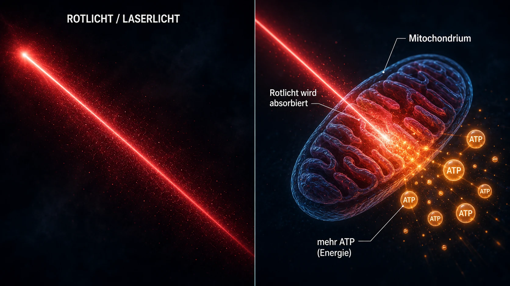
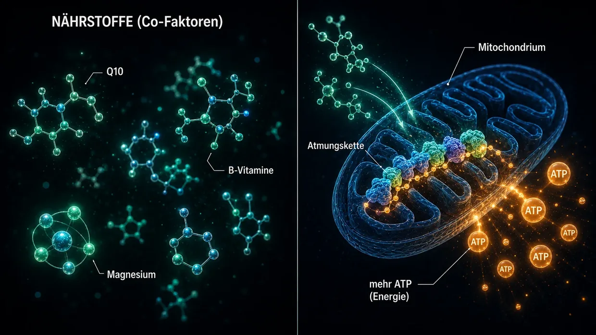

Wissenschaftliche Quellen & klinische Evidenz
Diese Seite zeigt das Fundament unter allem, was ich auf dieser Website schreibe. Mein Modell ist meine persönliche Interpretation dessen, was bei meinem Tinnitus zellulär passiert ist. Aber die einzelnen Bausteine — die Crosslinker zwischen den Aktin-Filamenten in den Sinneshärchen, die Calpain-Aktivierung bei Lärm, der ATP-Stoffwechsel, die XIRP2-Reparatur, der Central Gain im Gehirn, die lokale HPA-Achse in der Cochlea, die mitochondriale Wirkung von Q10, B-Vitaminen und Niacin — sind keine Spinnerei. Sie sind in der Forschung dokumentiert, und sie sind in der ärztlichen Praxis erprobt.
Einleitung: Zwei Arten von Evidenz
Eine ehrliche Vorbemerkung: Ich packe auf diese Seite zwei Arten von Evidenz — und ich stelle sie bewusst nebeneinander, ohne die eine von vornherein über die andere zu stellen.
Erstens: Die Mechanismus-Studien zu Crosslinker, Calpaine und Co aus der Grundlagenforschung. Das sind peer-reviewte (von unabhängigen Fachleuten geprüfte) Arbeiten in Journals wie Nature Communications, Journal of Neuroscience, PNAS oder eLife. Sie zeigen, wie die zelluläre Maschinerie (also die Abläufe in den einzelnen Zellen) funktioniert — wie Crosslinker die Stereozilien stabilisieren, wie Calpaine bei Lärm aktiv werden, wie XIRP2 Brüche notdürftig stabilisiert, wie ATP-Steigerung das Gehör nach Lärmschäden so weit wiederherstellt, wie es die individuelle körperliche Kapazität zulässt. Diese Studien sind unentbehrlich, um mein Lärmtinnitus-Modell zu verstehen.
Zweitens: Die klinische Praxis-Evidenz erfahrener Ärzte (also das, was erfahrene Ärzte über Jahre direkt bei echten Patienten gesehen und dokumentiert haben). Das sind Stimmen wie Dr. Lutz Wilden, der seit 1987 — also über 35 Jahren — kontinuierlich Innenohr-Patienten mit Low-Level-Lasertherapie behandelt und Audiogramme vor und nach der Behandlung als Standard-Dokumentation führt. Plus Tausende Home-Laser-Nutzer weltweit, die ihre Eigentherapie mit Kontroll-Audiometrien begleiten. In der Schweiz hat Tinnitool seit den 90er-Jahren ebenfalls Tausende Patienten mit derselben Wirklogik (LLLT → ATP-Steigerung in den Hörzellen) versorgt. Dazu kommen die Hahn-Gruppe in Prag (540 Patienten in zwei veröffentlichten Studien), die Kyoto-Universität in Japan und eine brasilianische Arbeitsgruppe — jeweils mit messbaren Verbesserungen, sobald der Laser stark genug war. Die Studien mit zu schwachem Laser, die im fairen Test nichts fanden, ordne ich weiter unten ehrlich ein. Oder Dr. Dietrich Klinghardt mit seiner jahrzehntelangen Arbeit zu Schwermetall- und Toxin-Belastungen. Diese Praxis-Erfahrung ist großteils nicht in den großen Fachzeitschriften (wie Nature Communications) veröffentlicht — und das hat Gründe, von denen Wilden selbst spricht. Das ändert aber nichts daran, dass über die letzten Jahrzehnte hinweg eine wirklich beachtliche Zahl echter Patienten auf diesem Weg genesen ist, mit Audiometrie-Belegen.
Warum beide Quellen zählen
Ich finde es ehrlicher, beide Evidenz-Quellen nebeneinander zu stellen, als so zu tun, als wäre nur peer-reviewt die einzige Wahrheit, die man ernst nehmen kann. Nach meiner Ansicht liegt es daran, dass ein großer Teil der Tinnitus-Forschungsgelder eher in Hörgeräte-Entwicklung und Medikamenten-Pipelines mit Patentschutz fließt. Für unpatentierbare Nährstoff-Kombinationen, für spezifische Hochdosis-Laserprotokolle oder Entgiftungsprotokolle gibt es schlicht kein institutionelles Forschungsinteresse.
Ich bin kein Arzt, kein Wissenschaftler und kein Forscher. Ich bin ein ehemaliger Betroffener, der zweimal geheilt wurde und dessen vorhandene Audiometrie-Unterlagen ausschließlich den ersten Verlauf betreffen. Ich habe obsessiv viel gelesen, recherchiert und ausprobiert. Wenn ich hier eine Studie oder einen Arzt zitiere, heißt das nicht, dass das ein Beweis dafür ist, dass mein Weg bei dir funktioniert. Es heißt, dass die einzelnen Bausteine, auf die ich mich berufe, in Forschung und Praxis ernst genommen werden. Bei akuten Beschwerden – insbesondere bei akutem Tinnitus oder Hörverlust – konsultiere bitte zuerst einen HNO-Arzt, um organische Ursachen abklären zu lassen.
Eins vorweg, bevor wir ins Detail gehen: Die wichtigste Erkenntnis meiner ganzen Recherche ist ein Muster, das mir immer wieder begegnet ist — überall dort, wo die Energie-Produktion in den Haarzellen spürbar hochgefahren wurde, hat sich der Tinnitus gebessert. Drei völlig verschiedene Wege, ein gemeinsamer Nenner. Das zeige ich dir ausführlich weiter unten: Wer sofort dorthin springen will, klickt hier. Alle anderen nehme ich erst mit ins Fundament — wie das Ohr gebaut ist, und was dabei kaputtgeht.
Teil 1: Mechanismus-Studien aus der Grundlagenforschung
Crosslinker zwischen den Aktin-Filamenten in Stereozilien
Auf der Hauptseite vergleiche ich die Sinneshärchen mit einem Bündel ungekochter Spaghetti, das durch kurze Proteinbrücken — die Crosslinker — zusammengehalten wird. Diese Crosslinker sind keine Erfindung von mir. Sie sind drei konkrete Proteinfamilien — Plastin/Fimbrin (PLS1), Espin (ESPN) und Fascin-2 (FSCN2) — und ihre Existenz und Funktion in den Sinneshärchen ist seit über 20 Jahren molekular dokumentiert.
Krey JF, Krystofiak ES, Dumont RA, et al. (2016). Plastin 1 widens stereocilia by transforming actin filament packing from hexagonal to liquid. Journal of Cell Biology, 215(4), 467–482. PMID: 27811163. Link
Die Schlüsselstudie zur Quantifizierung der Crosslinker. Mittels Massenspektrometrie wiesen Krey et al. nach, dass ein einziges Stereozilium etwa 30.500 Plastin-1-Moleküle, 16.100 Fascin-2-Moleküle und 14.800 Espin-Moleküle zwischen den Aktin-Filamenten enthält. Plastin-1 ist nach Aktin selbst das zweithäufigste Protein im gesamten Stereozilium. Mäuse ohne funktionales Plastin-1 oder Fascin-2 zeigten reduzierte Hörfunktion, Doppelmutanten waren am stärksten betroffen. Stereozilien ohne Plastin-1 sind kürzer und dünner als Wildtyp-Stereozilien. Das ist der direkte experimentelle Beleg, dass die Crosslinker die strukturelle Integrität der Sinneshärchen tatsächlich tragen.
Perrin BJ, Strandjord DM, Narayanan P, et al. (2013). β-Actin and Fascin-2 Cooperate to Maintain Stereocilia Length. Journal of Neuroscience, 33(19), 8114–8121. PMID: 23658152. Link
Direkter Beleg, was passiert, wenn Fascin-2 funktional ausfällt: Mäuse mit einer Fascin-2-Mutation zeigen progressive, hochfrequente Hörverluste und eine spezifische Verkürzung der zweiten und dritten Stereozilien-Reihe. Die mutante Fascin-2-Variante bindet zwar noch an Aktin, kann die Filamente aber nicht mehr effektiv vernetzen — und genau dadurch verlieren die Härchen ihre Länge. Das ist der gleiche strukturelle Endeffekt, den ich auf der Hauptseite beim lärmbedingten Crosslinker-Verlust beschreibe, hier eben durch eine genetische Mutation simuliert statt durch Calpain-Spaltung.
Sekerková G, Zheng L, Loomis PA, et al. (2004). Espins are multifunctional actin cytoskeletal regulatory proteins in the microvilli of chemosensory and mechanosensory cells. Journal of Neuroscience, 24(23), 5445–5456. PMID: 15190118. Link
Die strukturelle Charakterisierung von Espin als Aktin-Crosslinker in Stereozilien. Espin wird als Bündelungsprotein für die parallelen Aktin-Filamente identifiziert und ist nicht durch Calcium hemmbar — was wichtig ist, weil das Innere der Stereozilien bei normaler Funktion Calcium-Schwankungen ausgesetzt ist. Mäuse mit defekten Espinen sind taub und haben Gleichgewichtsstörungen. Espin-Mutationen verursachen auch beim Menschen erbliche Taubheit.
Was das alles zusammen bedeutet: Wenn die drei Crosslinker — Plastin/Fimbrin, Espin, Fascin-2 — bereits durch genetische Mutation oder Knockout zu Hörverlust und strukturellen Stereozilien-Defekten führen, ist es biologisch plausibel, dass eine erworbene, lärm-induzierte Calpain-Spaltung dieser oder verwandter Crosslinker — wie ich sie auf der Hauptseite beschreibe — denselben strukturellen Endeffekt haben kann.
Calpain-Aktivierung bei Lärm
Bei Lärm strömt massiv Calcium in die Haarzelle. Diese Calcium-Überlast aktiviert Calpaine — Calcium-abhängige Protease-Enzyme, die anschließend Aktin-vernetzende Proteine spalten. Dass dieser Mechanismus real ist, ist durch zwei unabhängige Forschungslabore mit verschiedenen Calpain-Hemmstoffen belegt.
Lai R, Fang Q, Wu F, Pan S, Haque K, Sha SH. (2023). Prevention of noise-induced hearing loss by calpain inhibitor MDL-28170 is associated with upregulation of PI3K/Akt survival signaling pathway. Frontiers in Cellular Neuroscience, 17, 1199656. Link
Direkter Beleg für den Calpain-Mechanismus: Lärm aktiviert µ-Calpain und m-Calpain in den Haarzellen, und der Calpain-Hemmstoff MDL-28170 verhindert sowohl den Hörverlust als auch den Synapsenverlust. Die Studie zeigt zusätzlich, dass Calpain das Strukturprotein α-Fodrin spaltet — einen Spektrin-Aktin-Vernetzer im Zellkortex. Das ist nicht exakt derselbe Crosslinker-Typ wie die Stereozilien-spezifischen Plastin/Espin/Fascin-2, aber es belegt, dass Calpain bei Lärm aktiviert wird und Aktin-vernetzende Proteine angreift. Dass dabei auch die Stereozilien-Crosslinker betroffen sein könnten, ist eine plausible Hypothese aus dieser Konvergenz.
Yamaguchi T, Yoneyama M, Ogita K. (2017). Calpain inhibitor alleviates permanent hearing loss induced by intense noise by preventing disruption of gap junction-mediated intercellular communication in the cochlear spiral ligament. European Journal of Pharmacology, 803, 187–194. PMID: 28366808. Link
Bestätigt die Calpain-Schadensmechanik aus einem zweiten Labor mit anderem Hemmstoff (PD150606). Erweitert das Bild auf eine zweite Schadensstelle: Calpain greift bei Lärm auch die Gap-Junction-Kommunikation im Spiralligament an — die seitliche Cochlea-Wand. Lärmschaden ist nie auf eine einzige Stelle beschränkt.
Hintergrund-Lektüre: Fettiplace R, Hackney CM. (2006). The sensory and motor roles of auditory hair cells. Nature Reviews Neuroscience, 7(1), 19–29. — Die klassische Übersicht zu Aufbau und Funktion von Haarzellen.
Aktin-Reparatur durch XIRP2 (Phase 1)
Wagner EL, Im JS, Sala S, et al. (2023). Repair of noise-induced damage to stereocilia F-actin cores is facilitated by XIRP2 and its novel mechanosensor domain. eLife, 12, e72681. PMID: 37294664. Link
Die wichtigste mechanistische Arbeit zur Haarzellen-Selbstreparatur. Bei Lärm entstehen messbare „Gaps" im Aktin-Gerüst der Sinneshärchen. Bei Mäusen werden diese innerhalb einer Woche durch frisch synthetisiertes γ-Aktin geschlossen. Das Reparatur-Protein XIRP2 erkennt die Schäden mechanisch und leitet die Reparatur ein. Ohne XIRP2 bleiben Schäden dauerhaft.
Auf der Hauptseite beschreibe ich XIRP2 als „Panzer-Tape", das die Bruchstellen notdürftig stabilisiert (Phase 1). Die eigentliche Phase-2-Reparatur — frisches Aktin nachbauen, neue Crosslinker einsetzen — braucht in dieser Studie etwa eine Woche bei perfekt versorgten Labormäusen. Was das für den gestressten erwachsenen Menschen bedeutet, der gleichzeitig im energetischen Hamsterrad steckt, ist die entscheidende Frage — denn ihm fehlt oft genau die Energie, die diese Reparatur braucht.
NIH-gefördert (R01DC021176).
ATP-Steigerung als Reparatur-Hebel: AC102
Das ist das Herzstück meines Lärm-Protokolls auf der pharmakologischen Spur: Wenn die Zelle zu wenig Energie hat, repariert sie sich nach meiner Ansicht zu langsam und nicht ausreichend, um gegen die täglichen Belastungen anzukommen. Hier sind die Studien, die zeigen, dass dieser Gedanke aus pharmazeutischer Sicht ernst genommen wird — ein Berliner Pharmaunternehmen entwickelt aktuell ein Medikament, das genau auf diesen Mechanismus zielt.
Rommelspacher H, Bera S, Brommer B, Ward R et al. (2024). A single dose of AC102 restores hearing in a guinea pig model of noise-induced hearing loss to almost prenoise levels. PNAS, 121(15), e2314763121. PMID: 38557194. Link
Die Kernstudie zu AC102. In-vitro-Tests zeigten, dass AC102 die zelluläre ATP-Produktion deutlich steigert und gleichzeitig reaktive Sauerstoffspezies (ROS) abbaut. Im Tiermodell verbesserte eine einzige Dosis das Gehör nach Lärmtrauma signifikant – im Studientitel als „fast auf Vor-Lärm-Niveau" beschrieben (konkret: 13–31 dB Verbesserung bei einem mittleren Lärm-induzierten Hörverlust von 80 dB – signifikant, aber keine vollständige Wiederherstellung). Die Mechanismen — ATP-Produktion ankurbeln, ROS reduzieren, Synapsen schützen — sind exakt die Mechanik meines Modells, nur eben pharmakologisch erzwungen.
Tziridis K, Rasheed J, Kwiatkowska M, et al. (2025). A Single Dose of AC102 Reverts Tinnitus by Restoring Ribbon Synapses in Noise-Exposed Mongolian Gerbils. International Journal of Molecular Sciences, 26(11), 5124. Link
Hier wurde zusätzlich getestet, ob AC102 auch tinnitusspezifische Verhaltensmuster umkehrt. Ergebnis: Ja, weitgehend — und die Ribbon-Synapsen zwischen Haarzellen und Hörnerv erholten sich signifikant. Direkter Beleg, dass das Glutamat-Dauerfeuer am Hörnerv aufhört, wenn die zelluläre Energie zurückkommt.
Nieratschker M, Yildiz E, Gerlitz M, et al. (2024). A preoperative dose of the pyridoindole AC102 improves the recovery of residual hearing in a gerbil animal model of cochlear implantation. Cell Death & Disease, 15, 531. Link
Erweitert die AC102-Evidenz auf eine zweite Schadensspur: Auch bei Cochlea-Implantations-Trauma schützt der Wirkstoff das Resthörvermögen. Das zeigt, dass der Mechanismus unabhängig vom Schadens-Auslöser greift — ob mechanisches Trauma durch Lärm oder durch eine Operation, die zelluläre Not-Kaskade ist die gleiche, und der ATP-Hebel funktioniert in beiden Fällen.
AudioCure Pharma GmbH. Clinical Study NCT05776459. AC102 befindet sich aktuell in einer europaweiten Phase-2-Studie bei Patienten mit plötzlichem sensorineuralem Hörverlust (SSNHL) — 210 Patienten eingeschlossen, Rekrutierung abgeschlossen, Ergebnisse stehen noch aus. Link
Stress, HPA-Achse und die Cochlea als neuroendokrines Organ
Der Stress-Tinnitus ist wissenschaftlich schwieriger zu greifen als der Lärm-Tinnitus. Für mein Modell ist hier entscheidend: Allgemeiner chronischer Stress erzeugt nicht über die HPA-Achse einen eigenen Tinnituston. Er kann das Innenohr aber verletzlicher machen. Durch die Aktivierung des Sympathikus kann sich die Durchblutung vermindern; wenn sich die Blutgefäße der Stria vascularis verengen, kann das Innenohr anfälliger für Schäden durch Lärm oder andere Einwirkungen werden. Die folgenden Arbeiten zum lokalen HPA-Signalsystem der Cochlea beschreiben physiologische Vorgänge im Innenohr. Ich leite daraus keinen eigenständigen HPA-Weg ab, der Tinnitus erzeugt.
Graham CE, Vetter DE. (2011). The mouse cochlea expresses a local hypothalamic-pituitary-adrenal equivalent signaling system and requires corticotropin-releasing factor receptor 1 to establish normal hair cell innervation and cochlear sensitivity. Journal of Neuroscience, 31(4), 1267–1278. PMID: 21273411. Link
Die Schlüsselstudie. Die Maus-Cochlea exprimiert das gesamte HPA-Achsen-Signalsystem lokal: Corticotropin-Releasing-Factor (CRF), CRF1-Rezeptor, ACTH, Mineralocorticoid-Rezeptor und Glucocorticoid-Rezeptor. Mäuse mit Knockout des CRF1-Rezeptors zeigen gestörte Haarzellen-Innervation und verminderte cochleäre Sensitivität. Die Studie beschreibt damit ein lokales Regulationssystem der Cochlea, nicht den Beleg für einen eigenständigen HPA-Tinnitusweg.
Graham CE, Basappa J, Vetter DE. (2010). A corticotropin-releasing factor system expressed in the cochlea modulates hearing sensitivity and protects against noise-induced hearing loss. Neurobiology of Disease, 38(2), 246–258. PMID: 20109547. Link
Die Vorgängerstudie zu Graham/Vetter 2011: zeigt, dass das lokale CRF-System in der Cochlea die Hörempfindlichkeit moduliert und vor lärmbedingtem Hörverlust schützen kann.
Furuta H, Mori N, Sato C, et al. (1994). Mineralocorticoid type I receptor in the rat cochlea: mRNA identification by PCR and in situ hybridization. Hearing Research, 78(2), 175–180. PMID: 7982810. Link
Die historische Erstbeschreibung: Mineralocorticoid-Rezeptoren sind in der Stria vascularis der Cochlea exprimiert — also genau in der „Batterie" des Innenohrs, die das Kalium-Reservoir der Endolymphe aufrechterhält. Cortisol kann dort über die Mineralocorticoid-Rezeptoren die Kalium-Sekretion modulieren.
Mazurek B, Haupt H, Olze H, Szczepek AJ. (2012). Stress and tinnitus – from bedside to bench and back. Frontiers in Systems Neuroscience, 6, 47. Link
Die systematische Synthese aus der Berliner Charité: Mazurek und Szczepek führen die Original-Befunde von Graham/Vetter und Furuta zu drei testbaren Hypothesen zusammen, wie Stress Tinnitus auslösen kann — über das lokale HPA-System der Cochlea, über Cortisol-Modulation der Mineralocorticoid-Rezeptoren in der Stria vascularis (mit Folge für die Kalium-Sekretion), und über Glutamat-vermittelte Plastizität in der Hörbahn. Das sind die Hypothesen der Autoren; ich übernehme sie nicht als mein Modell der Tonentstehung.
Hébert S, Lupien SJ. (2007). The sound of stress: Blunted cortisol reactivity to psychosocial stress in tinnitus sufferers. Neuroscience Letters, 411(2), 138–142. PMID: 17084027. Link
Tinnitus-Patienten zeigen auf akuten psychosozialen Stress eine verzögerte und abgeflachte Cortisol-Antwort. Die Studie beschreibt damit eine veränderte Stressreaktion bei den untersuchten Betroffenen; sie zeigt nicht, dass eine HPA-Erschöpfung den Tinnitus verursacht.
Manohar S, Chen GD, Li L, Liu X, Salvi R. (2023). Chronic stress induced loudness hyperacusis, sound avoidance and auditory cortex hyperactivity. Hearing Research, 431, 108726. PMID: 36905854. Link
In diesem Tiermodell entwickelten Ratten unter chronischem Stress Lautheits-Hyperakusis, Schallvermeidung und Hyperaktivität im auditorischen Cortex — ohne akute Lärmexposition. Die Studie untersuchte damit stressbedingte Veränderungen der Lautheitsverarbeitung; sie belegt keinen eigenständigen Stress-Tinnitusweg.
Schaette R, McAlpine D. (2011). Tinnitus with a Normal Audiogram: Physiological Evidence for Hidden Hearing Loss and Computational Model. Journal of Neuroscience, 31(38), 13452–13457. Link
Schaette und McAlpine beschreiben das Central-Gain-Modell: Wenn der auditorische Input reduziert ist, fährt das zentrale Hörsystem seine Empfindlichkeit nach oben. In meinem Modell verstärkt Central Gain nur ein bereits vorhandenes aktives Fehlsignal; aus Inputverlust allein entsteht kein Tinnituston.
Auerbach BD, Rodrigues PV, Salvi RJ. (2014). Central Gain Control in Tinnitus and Hyperacusis. Frontiers in Neurology, 5, 206.
Eggermont JJ, Roberts LE. (2004). The neuroscience of tinnitus. Trends in Neurosciences, 27(11), 676–682.
Auerbach, Rodrigues und Salvi behandeln das Central-Gain-Konzept im Zusammenhang mit Tinnitus und Hyperakusis; das ist die Position dieser Übersichtsarbeit, nicht mein Modell der Tonentstehung. Tinnitus und Hyperakusis können zusammen auftreten, ich führe sie jedoch nicht als Nebenwirkungen zentraler Verstärkung auf. Eggermont/Roberts (Klassiker): Tinnitus geht einher mit veränderter spontaner neuronaler Aktivität und veränderter tonotopischer Organisation im auditorischen Cortex.
Trauma, gespeicherter Stress und die neuronale Mitreizung benachbarter Bahnen
Ein davon getrennter zentraler Weg betrifft die Frage: Wie kann ein gespeichertes Trauma Jahre später noch körperliche Symptome auslösen — und wie kann ein lokaler, autarker Stressherd im Gehirn benachbarte Nervenzentren tatsächlich mitaktivieren?
Genau das ist der Mechanismus, den Michael Prgomet didaktisch als „elektrostatisches Spannungsfeld" beschreibt (siehe Sektion 14). Auf meiner Stress-Tinnitus-Seite habe ich das Modell in einfacher Sprache aufgebaut. Diese Sektion zeigt: Die einzelnen neurobiologischen Bausteine, die diesem Modell zugrunde liegen, sind wissenschaftlich gut etabliert. Das Originelle an der Synthese ist die Verknüpfung dieser Bausteine zu einem kohärenten Erklärungsmodell — die einzelnen Mechanismen selbst sind peer-reviewt und mehrfach repliziert.
5.1.1 Trauma hinterlässt messbare neurobiologische Spuren
Ein starkes oder chronisches Stresserlebnis verändert nachweislich Struktur und Funktion bestimmter Hirnbereiche. Trauma bleibt nicht „nur psychisch", sondern wird im Nervensystem körperlich verschaltet.
McEwen BS, Nasca C, Gray JD. (2016). Stress Effects on Neuronal Structure: Hippocampus, Amygdala, and Prefrontal Cortex. Neuropsychopharmacology, 41(1), 3–23. PMID: 26076834. Link
Beschreibt, dass chronischer Stress messbare strukturelle und funktionelle Veränderungen in Hippocampus, Amygdala und präfrontalem Cortex auslöst. Genau diese Bereiche sind zentral für Gedächtnis, Angst, Bewertung und Stressregulation — also exakt jene Strukturen, die in einem dauerhaft aktiven Stressmuster eine Rolle spielen.
Sherin JE, Nemeroff CB. (2011). Post-traumatic stress disorder: the neurobiological impact of psychological trauma. Dialogues in Clinical Neuroscience, 13(3), 263–278. PMID: 22034143. Link
Übersicht zu langfristigen neurobiologischen Trauma-Effekten: Amygdala-Hyperreaktivität, präfrontale Kontrolldefizite, Hippocampus-Veränderungen und nachhaltige Veränderungen der Stresshormonsysteme. Trauma ist also nicht „vorbei, sobald die Situation vorbei ist" — es ist im Nervensystem verschaltet.
Yehuda R, LeDoux J. (2007). Response Variation following Trauma: A Translational Neuroscience Approach to Understanding PTSD. Neuron, 56(1), 19–32. PMID: 17920012. Link
Zeigt, dass Trauma die HPA-Achse, das noradrenerge System, die autonome Reaktivität und die hippocampale Funktion langfristig verändern kann. Das ist die mechanistische Grundlage für gespeicherte Stressmuster, die im Hintergrund weiterlaufen können.
5.1.2 Allostatische Last — warum erst chronischer Stress problematisch wird
Akuter, situativer Stress ist gesund und gut wegsteckbar. Die Phänomene, die ich auf der Stress-Tinnitus-Seite beschreibe, treten nicht bei einem normalen Streit oder einer akuten Belastung auf — sie entstehen erst, wenn das System sich nicht mehr erholen kann und sich Belastung über Zeit aufstaut.
McEwen BS. (1998). Stress, Adaptation, and Disease: Allostasis and Allostatic Load. Annals of the New York Academy of Sciences, 840(1), 33–44. PMID: 9629234. Link
Begründet das Konzept der allostatischen Last. Akuter Stress ist nützlich; chronische, kumulative Belastung beschädigt das System. Genau dieser Punkt grenzt mein Modell präzise gegen die irreführende Aussage „Stress macht generell Tinnitus" ab. Es geht nicht um Alltagsstress — es geht um chronisch vorbelastete Systeme.
McEwen BS, Stellar E. (1993). Stress and the individual: mechanisms leading to disease. Archives of Internal Medicine, 153(18), 2093–2101. PMID: 8379800.
Beschreibt die Mechanismen, über die chronischer Stress zu Krankheit führt — über kumulative Belastung, nicht über einzelne Episoden. Erklärt sauber, warum nicht jeder Mensch mit Alltagsstress diese Phänomene entwickelt, sondern nur Menschen, deren System bereits chronisch destabilisiert ist.
5.1.3 Zentrale Sensitivierung — der Verstärker im vorbelasteten Nervensystem
Bei chronischer Belastung wird das zentrale Nervensystem reizempfindlicher. Hemmung sinkt, Erregbarkeit steigt, Reizschwellen werden niedriger. Vorher unterschwellige Reize reichen plötzlich aus, um Symptome auszulösen. Das ist die wissenschaftliche Beschreibung dessen, was ich auf der Stress-Tinnitus-Seite als „vorbelastetes, reizoffenes System" beschreibe.
Woolf CJ. (2011). Central sensitization: Implications for the diagnosis and treatment of pain. Pain, 152(3 Suppl), S2–S15. PMID: 20961685. Link
Definiert zentrale Sensitivierung als erhöhte Reaktivität zentraler Neuronen auf normale oder unterschwellige Eingangsreize. Etablierter Eckpfeiler der modernen Schmerzforschung. Mein Modell überträgt dieses Prinzip auf den stressbedingten Tinnitus.
Latremoliere A, Woolf CJ. (2009). Central sensitization: a generator of pain hypersensitivity by central neural plasticity. The Journal of Pain, 10(9), 895–926. PMID: 19712899. Link
Detaillierte Beschreibung der zellulären und molekularen Mechanismen zentraler Sensitivierung. Zeigt, wie ein vorbelastetes System überhaupt erst die Voraussetzung dafür schafft, dass kleine Stressfelder symptomatisch werden können.
Yunus MB. (2008). Central sensitivity syndromes: a new paradigm and group nosology for fibromyalgia and overlapping conditions. Seminars in Arthritis and Rheumatism, 37(6), 339–352. PMID: 18191990. Link
Wendet das Konzept der zentralen Sensitivierung auf Fibromyalgie, chronische Erschöpfung, Reizdarm, chronischen Tinnitus und verwandte Syndrome an. Das ist genau die Brücke, die mein Stress-Tinnitus-Modell wissenschaftlich verankert.
5.1.4 Ephaptische Kopplung — direkte elektrische Mitreizung benachbarter Nervenzellen
Das ist der harte neurophysiologische Kern hinter der Van-de-Graaff-Metapher. Wenn ein neuronales Areal stark und synchron feuert, erzeugt es lokale elektrische Felder, die benachbarte Nervenzellen tatsächlich beeinflussen können — ohne klassische Synapse. Bei ausreichender Aktivität können diese Felder Nachbarzellen über die Reizschwelle drücken und ihr Feuerverhalten synchronisieren. Genau das ist der Mechanismus hinter „Nerv A feuert, Nerv B wird mitgezogen".
Anastassiou CA, Perin R, Markram H, Koch C. (2011). Ephaptic coupling of cortical neurons. Nature Neuroscience, 14(2), 217–223. PMID: 21240273. Link
Direkter experimenteller Nachweis ephaptischer Kopplung im Cortex. Die Studie zeigte, dass extrazelluläre elektrische Felder die Membranspannung benachbarter Neuronen verändern und das Aktionspotenzial-Timing synchronisieren können. Das ist der zentrale Beleg dafür, dass eine stark aktive Nervenzellgruppe Nachbarzellen tatsächlich elektrisch mitaktivieren kann.
Buzsáki G, Anastassiou CA, Koch C. (2012). The origin of extracellular fields and currents — EEG, ECoG, LFP and spikes. Nature Reviews Neuroscience, 13(6), 407–420. PMID: 22595786. Link
Grundlegende Übersicht zur Entstehung elektrischer Felder im Gehirn. Beschreibt, wie synchron aktive Neuronengruppen über Spannungsgradienten andere Neuronen funktionell beeinflussen können. Macht klar: Das sind keine „großen Blitze" wie bei einer Hochspannungskugel — es sind kleine, lokal gebundene Feldwirkungen, aber sie sind real und biologisch wirksam.
Fröhlich F, McCormick DA. (2010). Endogenous electric fields may guide neocortical network activity. Neuron, 67(1), 129–143. PMID: 20624597. Link
Zeigt, dass endogene elektrische Felder neuronale Netzwerkaktivität nicht nur begleiten, sondern kausal mitsteuern. Ein schwerer Sargnagel für die Annahme, dass elektrische Feldwirkungen im Gehirn nur ein Begleitphänomen sind.
5.1.5 Kindling — wiederholte Reizung bahnt das Muster ein
Wenn ein neuronales Areal wiederholt unterschwellig gereizt wird, wird es über Zeit immer leichter aktivierbar — und rekrutiert zunehmend Nachbarareale mit. Aus der Epilepsieforschung etabliert, mittlerweile auch auf chronische Schmerz-, Trauma- und Reizzustände übertragen.
Goddard GV, McIntyre DC, Leech CK. (1969). A permanent change in brain function resulting from daily electrical stimulation. Experimental Neurology, 25(3), 295–330. PMID: 4981856.
Klassische Originalarbeit zum Kindling-Phänomen. Wiederholte unterschwellige Reizung erzeugt eine permanente Veränderung der Hirnfunktion — das Areal wird über Zeit immer leichter aktivierbar.
Post RM. (2007). Kindling and sensitization as models for affective episode recurrence, cyclicity, and tolerance phenomena. Neuroscience & Biobehavioral Reviews, 31(6), 858–873. PMID: 17555817. Link
Übertragung des Kindling-Konzepts auf affektive Störungen, PTBS und chronische Stresszustände. Erklärt wissenschaftlich, warum chronisch reaktivierte Stressmuster über Zeit nicht abklingen, sondern stärker und großflächiger werden können — exakt das Phänomen, das ich auf der Stress-Tinnitus-Seite beschreibe.
5.1.6 Glia-Aktivierung und Neuroinflammation — der biochemische Verstärker
Chronische Reizung aktiviert Mikroglia und Astrozyten. Diese setzen Botenstoffe frei (TNF-α, IL-1β, IL-6), die die Erregbarkeit umliegender Neuronen messbar erhöhen — und damit das gesamte Areal in einen leichter aktivierbaren Zustand versetzen. Das ist der biochemische Verstärker zwischen „vorbelastetes System" und „Stressfeld kann durchbrechen".
Ji RR, Nackley A, Huh Y, Terrando N, Maixner W. (2018). Neuroinflammation and Central Sensitization in Chronic and Widespread Pain. Anesthesiology, 129(2), 343–366. PMID: 29462012. Link
Direkter Nachweis, wie Glia-Aktivierung zentrale Sensitivierung antreibt. Mikroglia und Astrozyten sind nicht nur passive Stützzellen — sie modulieren neuronale Erregbarkeit aktiv und können bei chronischer Belastung das Nervengewebe in einen dauerhaft reizoffeneren Zustand versetzen.
Michopoulos V, Powers A, Gillespie CF, Ressler KJ, Jovanovic T. (2017). Inflammation in Fear- and Anxiety-Based Disorders: PTSD, GAD, and Beyond. Neuropsychopharmacology, 42(1), 254–270. PMID: 27510423. Link
PTBS und chronische Angst sind mit messbaren entzündlichen Veränderungen im Nervensystem verbunden. Schließt den Kreis: Trauma → Stress → Neuroinflammation → reizoffeneres Gewebe → leichteres Aktivierbarkeit gespeicherter Stressmuster.
5.1.7 Thalamokortikale Dysrhythmie — direkter Bezug zum Tinnitus
Bei chronischem Tinnitus zeigen MEG- und EEG-Studien pathologische Oszillationsmuster zwischen Thalamus und auditorischem Cortex. Ein lokal verändertes Aktivitätsmuster erzeugt anhaltende Theta-Gamma-Kopplungen, die zur dauerhaften Tonwahrnehmung beitragen können. Das ist die direkte neurophysiologische Brücke zwischen einem überaktiven Stressfeld und einer dauerhaften Tinnitus-Wahrnehmung.
Llinás RR, Ribary U, Jeanmonod D, Kronberg E, Mitra PP. (1999). Thalamocortical dysrhythmia: A neurological and neuropsychiatric syndrome characterized by magnetoencephalography. PNAS, 96(26), 15222–15227. PMID: 10611366. Link
Begründet das Konzept der thalamokortikalen Dysrhythmie als Mechanismus chronischer neurologischer Symptome — gemessen mit hochempfindlicher MEG-Technologie. Genau jene MEG-Geräte, mit denen man auch sehr kleine, lokal gebundene Spannungsfelder im Gehirn sichtbar machen kann.
De Ridder D, Vanneste S, Langguth B, Llinás R. (2015). Thalamocortical Dysrhythmia: A Theoretical Update in Tinnitus. Frontiers in Neurology, 6, 124. PMID: 26106362. Link
Direkte Übertragung des Konzepts auf chronischen Tinnitus mit MEG-Daten. Zeigt, dass pathologische Theta-Gamma-Kopplungen im auditorischen Cortex bei chronischen Tinnitus-Patienten messbar sind.
Vanneste S, De Ridder D. (2012). The auditory and non-auditory brain areas involved in tinnitus. An emergent property of multiple parallel overlapping subnetworks. Frontiers in Systems Neuroscience, 6, 31. PMID: 22586375. Link
Zeigt, dass chronischer Tinnitus mit verändertem Zusammenspiel mehrerer Hirnnetzwerke verbunden ist — auditorisch und nicht-auditorisch. Stress-Distress-Netzwerke sind dabei mit auditorischen Netzwerken funktionell gekoppelt. Das ist die Verbindung, über die ein überaktives Stressmuster auf das Hörsystem durchschlagen kann.
5.1.8 Memory Reconsolidation — warum sich alte Stressmuster überhaupt auflösen lassen
Alte emotionale Erinnerungen sind nicht für immer fest verschaltet. Wenn sie reaktiviert werden, geraten sie kurzzeitig in einen labilen Zustand und können neu gespeichert werden — verändert oder entladen. Das ist die wissenschaftliche Grundlage dafür, warum Methoden wie die von Michael Prgomet, EMDR oder andere reaktivierende Therapieansätze überhaupt funktionieren können.
Nader K, Schafe GE, Le Doux JE. (2000). Fear memories require protein synthesis in the amygdala for reconsolidation after retrieval. Nature, 406(6797), 722–726. PMID: 10963596. Link
Klassische Originalarbeit zur Memory Reconsolidation. Zeigt im Tiermodell, dass eine bereits gespeicherte Angsterinnerung nach erneutem Abruf wieder in einen labilen Zustand geraten kann und neu stabilisiert werden muss — und dabei gezielt verändert werden kann.
Lane RD, Ryan L, Nadel L, Greenberg L. (2015). Memory reconsolidation, emotional arousal, and the process of change in psychotherapy: New insights from brain science. Behavioral and Brain Sciences, 38, e1. PMID: 24827452. Link
Übertragung des Konzepts auf therapeutische Anwendung. Zeigt, dass gezielte Reaktivierung mit anschließender neuer Verarbeitung alte emotionale Programme verändern kann. Genau dieser Mechanismus liegt Prgomets Arbeit zugrunde — auch wenn seine spezifische Methode nicht durch klassische RCTs belegt ist.
5.1.9 Die Synthese: Mein Modell in einem Bild
Wenn man die einzelnen Bausteine zusammensetzt, ergibt sich folgendes Gesamtbild — und genau das beschreibe ich auf meiner Stress-Tinnitus-Seite in einfacher Sprache:
- Trauma oder chronischer Stress verändert Hirnstruktur und HPA-Achse → das System trägt eine veränderte Grundarchitektur (5.1.1)
- Allostatische Last baut sich auf, das System erholt sich nicht mehr → Vorbelastung entsteht (5.1.2)
- Zentrale Sensitivierung macht das gesamte Nervensystem reizoffener → niedrigere Schwellen (5.1.3)
- Glia und Neuroinflammation verstärken die Reizoffenheit biochemisch (5.1.6)
- Trigger reaktiviert das gespeicherte Stressmuster → lokales Areal feuert stärker
- Kindling hat das Areal über Zeit immer reaktionsbereiter gemacht (5.1.5)
- Ephaptische Kopplung ermöglicht die elektrische Mitaktivierung benachbarter Bahnen (5.1.4)
- Wenn diese Mitaktivierung hörverarbeitende Netzwerke trifft, kann daraus eine reale Tonwahrnehmung entstehen
- Thalamokortikale Dysrhythmie stabilisiert dieses Muster (5.1.7)
- Memory Reconsolidation zeigt: Solche Muster können sich auflösen, wenn die ursprüngliche Quelle gezielt reaktiviert und neu verarbeitet wird (5.1.8)
Jeder einzelne dieser zehn Bausteine ist peer-reviewt und mehrfach repliziert. Das Originelle an meinem Modell ist nicht ein einzelner Mechanismus — es ist die Verknüpfung. In der etablierten HNO-Praxis wird diese Verbindung selten zusammengedacht, weshalb stressbedingter Tinnitus oft entweder als „nur Psyche" abgetan oder mit isolierten Maßnahmen wie CBT behandelt wird, ohne die zugrunde liegende Mechanik zu erklären.
Was diese Sektion nicht behauptet
Damit es sauber bleibt — was hier nicht behauptet wird:
- Es wird nicht behauptet, dass jeder chronische Tinnitus stressbedingt ist. Lärmtinnitus, ototoxisch bedingter Tinnitus und andere Formen haben andere Hauptursachen (siehe die jeweiligen Sektionen).
- Es wird nicht behauptet, dass die spezifische Methode von Michael Prgomet durch klassische Peer-Review-Studien belegt ist (siehe Sektion 14). Belegt sind die einzelnen neurobiologischen Mechanismen, die seinem Erklärungsmodell zugrunde liegen.
- Es wird nicht behauptet, dass alle psychosomatischen Symptome bei chronischem Stress über genau diesen Mechanismus entstehen. Es gibt zahlreiche andere Pfade.
- Es wird kein Heilversprechen gegeben. Individuelle Verläufe können stark variieren.
Was hier festgehalten ist: Die einzelnen Bausteine, die mein Stress-Tinnitus-Modell stützen, sind in der Wissenschaft etabliert.
Medikamenten- und gift-induzierter Tinnitus
Manche Medikamente und Schadstoffe greifen Haarzellen direkt an. Die Mechanik ist anders als bei Lärm — aber der zelluläre Endpunkt ist meist derselbe: Calcium-Überladung der Mitochondrien, ATP-Mangel, Apoptose. Modell-Konvergenz auf einer zweiten, unabhängigen Spur.
Salvi R, Ding D, Manohar S, et al. (2022). Salicylate Ototoxicity, Tinnitus, and Hyperacusis. Springer Nature, Handbook of Neurotoxicity. Link
Die umfassende Review zur Aspirin-induzierten Ototoxizität. Salicylat blockiert Prestin — den elektromotorischen Motor der äußeren Haarzellen — und löst zentral eine Tinnitus-Reaktion aus. Akute Überdosis ist reversibel, chronische Hochdosis kann bleibende strukturelle Veränderungen auslösen.
Sheppard A, Hayes SH, Chen GD, et al. (2014). Review of salicylate-induced hearing loss, neurotoxicity, tinnitus and neuropathophysiology. Acta Otorhinolaryngologica Italica, 34(2), 79–93. Link
Detaillierte Aufarbeitung der Salicylat-Wirkungen.
Esterberg R, Linbo T, Pickett SB, et al. (2016). Mitochondrial calcium uptake underlies ROS generation during aminoglycoside-induced hair cell death. Journal of Clinical Investigation. Link
Aminoglykosid-Antibiotika (Gentamicin, Streptomycin) werden in die Haarzellen aufgenommen, induzieren Calcium-Aufnahme in die Mitochondrien, was zu massiver ROS-Produktion führt. Mechanistisch exakt die Calcium-Mitochondrien-Kaskade, die ich auf der Hauptseite beschreibe — nur mit chemischem statt mechanischem Auslöser.
Jiang M, Karasawa T, Steyger PS. (2017). Aminoglycoside-Induced Cochleotoxicity: A Review. Frontiers in Cellular Neuroscience, 11, 308. Link
Übersicht zur Aminoglykosid-Toxizität: Eintritt über Mechanotransducer-Kanäle, Mitochondrien-Schädigung, Apoptose.
Coenzym Q10 und Mitochondrien-Schutz
Q10 war ein fester Bestandteil meines Protokolls. Es ist ein Elektronenüberträger in der mitochondrialen Atmungskette und zugleich ein starkes Antioxidans.
Fetoni AR, Piacentini R, Fiorita A, Paludetti G, Troiani D. (2009). Water-soluble Coenzyme Q10 formulation (Q-ter) promotes outer hair cell survival in a guinea pig model of noise induced hearing loss (NIHL). Brain Research, 1257, 108–116. PMID: 19133240. Link
Tiermodell: Q10 reduzierte die Apoptose von äußeren Haarzellen nach Lärmtrauma signifikant.
Staffa P et al. (2014). Activity of coenzyme Q10 (Q-Ter multicomposite) on recovery time in noise-induced hearing loss. Noise and Health. Link
Kleine Humanstudie (30 Probanden): wasserlösliches Q10 verkürzte die Erholungszeit nach Lärmexposition und reduzierte durch Lärm ausgelösten Tinnitus.
Astolfi L et al. (2016). Coenzyme Q10 plus Multivitamin Treatment Prevents Cisplatin Ototoxicity in Rats. PLoS ONE, 11(9), e0162106. PMID: 27632426.
Q10 plus Multivitamin schützte Ratten vor ototoxischen Schäden durch das Chemotherapeutikum Cisplatin — derselbe Schutzmechanismus auf einer dritten Spur.
Magnesium und Vitamin B12
Cevette MJ, Barrs DM, Patel A, et al. (2011). Phase 2 study examining magnesium-dependent tinnitus. International Tinnitus Journal, 16(2), 168–173. PMID: 22249877. Link
Mayo-Clinic-Studie: Tägliche Gabe von 532 mg Magnesium über drei Monate führte zu signifikanter Reduktion der Tinnitus-Belastungswerte.
Singh C, Kawatra R, Gupta J, et al. (2016). Therapeutic role of Vitamin B12 in patients of chronic tinnitus: A pilot study. Noise & Health, 18(81), 93–97. Link
Doppelblinde Pilotstudie: 42,5 % der Tinnitus-Patienten hatten einen Vitamin-B12-Mangel. Wer einen Mangel hatte und mit B12-Injektionen behandelt wurde, zeigte signifikante Verbesserungen.
Shemesh Z, Attias J, Ornan M, et al. (1993). Vitamin B12 deficiency in patients with chronic-tinnitus and noise-induced hearing loss. American Journal of Otolaryngology, 14(2), 94–99. PMID: 8484483. Link
Die historische Erstbeschreibung: 47 % der Tinnitus-Betroffenen mit lärminduziertem Hörverlust hatten einen B12-Mangel — gegenüber 27 % bei Lärmgeschädigten ohne Tinnitus und nur 19 % bei Normalhörenden.
Bioverfügbarkeit & Nährstoff-Aufnahme
Auf meiner Bioverfügbarkeits-Seite erkläre ich, warum bei chronisch gestressten Menschen die Form und Darreichung von Nährstoffen oft wichtiger ist als die Zutatenliste. Die Physiologie dahinter ist gut etabliert — sie ist die Basis der weltweit eingesetzten oralen Rehydrationstherapie, die seit den 1960er-Jahren Millionen Leben gerettet hat.
Loo DDF, Zeuthen T, Chandy G, Wright EM. (1996). Cotransport of water by the Na+/glucose cotransporter. PNAS. Link
Die fundamentale Arbeit zum SGLT1-Cotransporter: Pro Transportzyklus werden Natrium, Glukose und rund 260 Wassermoleküle gleichzeitig in den Körper gepumpt.
Buccigrossi V et al. (2020). Potency of Oral Rehydration Solution in Inducing Fluid Absorption is Related to Glucose Concentration. Scientific Reports, 10, 7803. Link
Nicht jede Natrium-Glukose-Mischung wirkt gleich — das optimale Verhältnis liegt bei rund 60 mmol/L Natrium und 111 mmol/L Glukose. Die Formulierung muss präzise abgestimmt sein.
Mäuse vs. Menschen — warum ich mit Tiermodellen vorsichtig umgehe
Valero MD, Burton JA, Hauser SN, et al. (2017). Noise-induced cochlear synaptopathy in rhesus monkeys (Macaca mulatta). Hearing Research, 353, 213–223. PMID: 28712672. Link
Bei Primaten wurde nach Lärmbelastung ein Synapsenverlust von 12-27 Prozent gemessen — im Vergleich zu 40-55 Prozent bei Mäusen. Primaten (und damit wahrscheinlich auch Menschen) sind von einer einzelnen Lärmexposition weniger schwer betroffen als Mäuse.
Aber Vorsicht beim Umkehrschluss: Geringere Initial-Anfälligkeit ist nicht automatisch gleich bessere Reparaturkapazität. Im Gegenteil — der Mensch kombiniert unter Alltagsbedingungen geringere Spontan-Reparatur (durch Stress, Schlafmangel und schlechtere Versorgung) mit einer größeren, weiter zurückliegenden Schadensgeschichte. Das ist eine zentrale These meiner Argumentation.
Der rote Faden: ATP-Steigerung = Tinnitus-Verbesserung
Bevor ich in die Detail-Sektionen einsteige, möchte ich dir den zentralen Befund zeigen, der unter allem liegt. Wenn du nur eine Sache von dieser Quellenseite mitnehmen sollst, dann diese:
Wann immer in den letzten Jahrzehnten irgendwo auf der Welt — auf welchem Weg auch immer — die ATP-Produktion in den Haarzellen des Innenohrs gesteigert wurde, hat sich der Tinnitus verbessert.
Das ist keine Theorie und kein Wunschdenken. Es ist der konsistente Befund von drei völlig unabhängigen Therapie-Spuren, geforscht und angewendet von Wissenschaftlern und Ärzten in mindestens zehn verschiedenen Ländern, mit verschiedenen Methoden, an unterschiedlichen Patientenkohorten. Hier die drei Spuren — alle führen zum selben biochemischen Endpunkt.
Spur 1: ATP-Steigerung über Laserlicht (Photobiomodulation / LLLT)

Laserlicht im 600-900-nm-Bereich wird von der Cytochrom-c-Oxidase in der Atmungskette der Mitochondrien absorbiert. Der biochemische Effekt: mehr ATP, weniger oxidativer Stress, die Zelle kann aus dem energetischen Notbetrieb herauskommen.
Wichtigste Vertreter dieser Spur:
- Dr. Lutz Wilden, Bad Füssing/Ibiza, seit 1987 — tausende Tinnitus-Patienten mit hochdosiertem 830-nm-Laser behandelt, Audiometrien dokumentiert, klinische Ergebnisse veröffentlicht (Details und ehrliche Einordnung in Sektion 12)
- Hahn-Gruppe, Karls-Universität Prag, 2001/2012 — 420 Patienten in der größeren von zwei Studien, 56,7 % objektive Tinnitus-Verbesserung um durchschnittlich 30 dB durch Kombination von Laser + Ginkgo (EGb 761) (stützt die Kombinationstherapie, nicht Laser-Mono)
- Tauber et al., LMU München, 2003 — TCL-System für transmeatale Cochlea-Bestrahlung
- Cuda & De Caria, Italien, 2008 — Kombination Beratung und LLLT
- Teggi et al., San Raffaele Mailand, 2008/2009 — LLLT bei Morbus Menière
- Mollasadeghi et al., Iran, 2013 — Doppelblind-RCT bei lärmbedingtem Tinnitus, signifikant
- Shiomi et al., Universität Kyoto, 1997 — 40 mW 830 nm transmeatal, Pioniere
- Panhóca et al., Brasilien, 2023 — vergleichende RCT, LLLT als wirksamstes Verfahren
→ Volle Details siehe Sektion 11: LLLT-Dosis-Logik und Sektion 12: Dr. Wilden.
Spur 2: ATP-Steigerung über Pharmazeutika (AC102)
Ein in Berlin entwickelter pharmakologischer Wirkstoff, der direkt in die mitochondriale ATP-Produktion eingreift und gleichzeitig reaktive Sauerstoffspezies (aggressive Abfall-Moleküle, die die Zelle von innen angreifen — eine Art Zellrost) abbaut. Pharmazeutische Industrie greift hier auf, was Wilden und Hahn seit Jahrzehnten machen — nur als patentierbares Medikament.
Wichtigste Vertreter dieser Spur:
- Rommelspacher et al., AudioCure Pharma Berlin, Fachzeitschrift PNAS 2024 — eine einzige Dosis verbessert das Gehör nach Lärmtrauma im Tiermodell deutlich (signifikant, aber keine vollständige Wiederherstellung), ATP gesteigert, reaktive Sauerstoffspezies (Zellrost) reduziert, Synapsen geschützt
- Tziridis et al., Fachzeitschrift Int. J. Mol. Sci. 2025 — Ribbon-Synapsen (die feinen Kontaktstellen, über die die Hörzellen ihr Signal an den Hörnerv weitergeben) erholen sich, tinnitusspezifische Verhaltensmuster gehen zurück
- Nieratschker et al., Fachzeitschrift Cell Death & Disease 2024 — auch bei Cochlea-Implantations-Trauma wirksam
- Phase-2-Klinikstudie NCT05776459 — europaweit bei 210 SSNHL-Patienten (Menschen mit einem Hörsturz, also plötzlichem Hörverlust im Innenohr)
→ Volle Details siehe Sektion 4.
Spur 3: ATP-Steigerung über Nährstoffe

Mitochondriale Cofaktoren, die direkt die Atmungskette unterstützen oder freischalten. Ohne ausreichend Q10 läuft der Elektronentransport zwischen Komplex I/II und Komplex III nicht. Ohne ausreichend B12 demyelinisieren die Nervenfasern, einschließlich Hörnerv. Ohne ausreichend Magnesium funktionieren etwa 600 enzymatische Reaktionen nicht, einschließlich der ATP-Synthese selbst. Antioxidantien wie Vitamin C, E, Selen, Zink und Alpha-Liponsäure schützen die Zelle vor reaktiven Sauerstoffspezies, die als Folge des energetischen Notbetriebs anfallen.
3.1 Klassische Mitochondrien-Cofaktoren (Q10, Magnesium, B12)
- Fetoni et al., Brain Research 2009 — Q10 reduziert Apoptose äußerer Haarzellen nach Lärmtrauma signifikant
- Staffa et al., Noise & Health 2014 — Q10 verkürzt Erholungszeit nach Lärmexposition, reduziert Tinnitus
- Astolfi et al., PLOS One 2016 — Q10 plus Multivitamin schützt vor Cisplatin-Ototoxizität
- Cevette et al., Mayo Clinic 2011 — 532 mg Magnesium über 3 Monate reduzieren Tinnitus-Belastung signifikant (Wichtig: offene Studie ohne Placebo-Kontrolle, daher wegweisend, aber kein abschließender Beweis, da Tinnitus einen starken Spontanverlauf und Placeboeffekt zeigt)
- Singh et al., Noise & Health 2016 — 42,5 % der Tinnitus-Patienten haben B12-Mangel, Substitution verbessert signifikant bei Mangel-Patienten
- Shemesh et al., 1993 — historische Erstbeschreibung des B12-Tinnitus-Zusammenhangs
→ Volle Details siehe Sektion 7 und Sektion 8.
3.2 Niacin / Vitamin B3 / NAD+ — der direkteste ATP-Hebel überhaupt
Die hier referierten Dosen stammen aus publizierten Studien und sind keine Empfehlungen für Selbstmedikation. Vor jeder Supplementation – besonders in höheren Dosen – sprich mit deinem Arzt.
Niacin (Vitamin B3, in seinen Formen Nikotinsäure, Nikotinamid und Nikotinamid-Ribosid) ist die direkte Stoffwechsel-Vorstufe von NAD+ und NADH — den mitochondrialen Atmungsketten-Coenzymen. Ohne ausreichend NAD+ kann der Krebs-Zyklus keine Elektronen an die Atmungskette liefern, und ohne diese Elektronen wird kein ATP produziert. Niacin ist damit nicht einfach „ein weiterer Nährstoff bei Tinnitus“, sondern ein direkter Vorläufer für die ATP-Produktion in den Haarzellen. Wenn mein Modell stimmt – chronischer Tinnitus ist eine Energiekrise der Haarzelle –, dann müsste Niacin-Supplementation helfen. Um hier wissenschaftlich ehrlich zu bleiben: Direkte klinische Studien zu Niacin bei Tinnitus sind alt (überwiegend aus den 1940er bis 1980er Jahren) und größtenteils unkontrolliert. Es gibt zwar jahrzehntelange positive Berichte aus der naturheilkundlichen Praxis, aber keinen modernen, doppelblinden RCT-Beweis, dass Niacin den Tinnitus am Menschen bessert. Mechanistisch ist der Ansatz jedoch hervorragend gestützt, auch wenn er klinisch für Tinnitus beim Menschen noch nicht endgültig durchbewiesen ist (das Vertrauen liegt hier auf der Praxis-Spur).
Der Niacin-Flush — und warum er biologisch wichtig ist
Wer zum ersten Mal Nikotinsäure nimmt (besonders auf nüchternen Magen oder in höheren Dosen ab 100 mg), erlebt nach 15-30 Minuten den berühmt-berüchtigten Niacin-Flush: Die Haut wird heiß, kribbelt, rötet sich von Gesicht bis Brust, manchmal bis zu den Oberschenkeln. Sieht aus wie ein Sonnenbrand, fühlt sich an wie ein Wärmestau. Hält 30-60 Minuten an, ist harmlos und legt sich von selbst. Beim ersten Mal denkt man: „Ich sterbe." Beim zweiten Mal: „Aha, das ist also der Flush." Beim dritten Mal: „Eigentlich gar nicht so schlimm."
Was hier passiert: Nikotinsäure setzt im Körper die Prostaglandine D2 und E2 frei — Botenstoffe, die die Gefäße weiten. Der Flush ist damit das sichtbare Zeichen dafür, dass die Substanz biologisch aktiv ist und die Durchblutung anschiebt. Die ursprüngliche Nikotinsäure (mit Flush) ist für mein Modell deshalb so wertvoll — im Gegensatz zur flush-freien Form (Nicotinamid), die zwar ebenfalls zu NAD+ umgewandelt wird, aber die Gefäße nicht weitet. Wie weit dieser Effekt reicht — ob nur in die Haut oder tief ins Gewebe —, habe ich im nächsten Abschnitt ausführlich untersucht.
Praktische Hinweise:
- Mit der Zeit gewöhnt sich der Körper, der Flush wird schwächer
- Für niedrige Dauerdosen ist ungebufferte Nikotinsäure nach Mahlzeiten der saubere Weg
Wie weit reicht die Durchblutung? — Nur die Haut, oder tief und systemisch bis ins Innenohr?
Eine Studie am Menschen, die zeigt, dass Nikotinsäure bis ins Innenohr vordringt und dort die Durchblutung erhöht, habe ich nicht gefunden. Dennoch gibt es eine Menge Indizien, die genau dafür sprechen.
Dass Nikotinsäure die Durchblutung anschieben kann, ist gut belegt — in ausreichender Dosis spürt man es sofort am glühenden Gesicht. Die spannende Frage ist also gar nicht, ob sie überhaupt wirkt, sondern wie weit sie reicht: Bleibt das ein reines Oberflächen-Phänomen der Haut — oder geht es auch tief ins Gewebe und systemisch durch den ganzen Körper, bis in Bereiche wie das Innenohr?
Erst die Biologie — warum der Weg überhaupt offen ist. Bevor ich die Studien zeige — und einen faszinierenden Praxisbericht eines Arztes, der mich wirklich umgehauen hat — lohnt sich erst der Blick auf die Mechanik, denn die erklärt, warum das Ganze Sinn ergibt.
Wird genug Nikotinsäure aufgenommen, schwimmt sie im Blut und erreicht das Gewebe. Sie öffnet die Gefäße aber nicht selbst — sie ist ein Auslöser: Sie bringt Immunzellen dazu, Botenstoffe auszuschütten, die Prostaglandine D2 und E2. Wie viel davon ausgeschüttet wird, hängt davon ab, wie viel Nikotinsäure im Blut ankommt — also von Dosis und Bioverfügbarkeit.
Diese beiden Botenstoffe haben dabei unterschiedliche Rollen:
- D2 ist der schnelle, kräftige Erstschlag. Er trägt die sichtbare Welle — die Rötung, die Wärme, das Prickeln.
- E2 kommt nachgeschaltet und wirkt länger. Er trägt den Effekt weiter, wenn die sichtbare Rötung längst abgeklungen ist.
Der Flush ist also nicht das Ende der Wirkung — er ist nur der sichtbare Teil davon.
Hanson J, Gille A, Zwykiel S, et al. (2010). Nicotinic acid- and monomethyl fumarate-induced flushing involves GPR109A expressed by keratinocytes and COX-2-dependent prostanoid formation in mice. Journal of Clinical Investigation, 120(8), 2910-2919. DOI: 10.1172/JCI42273. Link
Diese Botenstoffe wirken dann im umliegenden Gewebe. Aber nur dort, wo die passenden Rezeptoren sitzen — die Schlösser zu diesen Schlüsseln. Werden sie aktiviert, weiten sich die Gefäße.
Und wichtig: Genau diese Schlösser sind im Innenohr nachgewiesen. Sie sprechen dort für eine Weitung — und genau das hat, wie gleich zu sehen, das Tiermodell auch direkt gemessen.
Damit ist der Weg biologisch geöffnet: Kommt der Stoff in ausreichender Menge im Blut an, wird er weiträumig im Körper verteilt → Immunzellen bauen den Botenstoff → das passende Schloss ist im Innenohr vorhanden → und wo der Schlüssel ins Schloss passt, weitet sich das Gefäß.
Stjernschantz J, Wentzel P, Rask-Andersen H (2004). Localization of prostanoid receptors and cyclo-oxygenase enzymes in guinea pig and human cochlea. Hearing Research, 197(1-2), 65-73. DOI: 10.1016/j.heares.2004.04.018. Link
Nakagawa T (2011). Roles of prostaglandin E2 in the cochlea. Hearing Research, 276(1-2), 27-33. DOI: 10.1016/j.heares.2011.01.015. Link
Ein Muster, das sich durch alles zieht. Nikotinsäure öffnet Gefäße auch dann, wenn der Körper sie gerade eng halten will. Das sieht man an jeder gesunden achtzehnjährigen Person: Der Körper hält die Hautgefäße im Ruhezustand bewusst eng — als Wärmeschutz und zur Kreislaufregulierung. Die Nikotinsäure setzt sich darüber hinweg und treibt die Durchblutung sogar über diesen Ruhezustand hinaus. Genau deshalb entstehen die Rötung und die Wärme — der Flush ist das sichtbare Zeichen dafür.
Und keine Sorge: Man rennt danach nicht den ganzen Tag mit knallrotem Kopf herum. Die sichtbare Rötung — die schnelle D2-Welle — klingt nach etwa einer halben bis ganzen Stunde wieder ab.
Und das ist der springende Punkt: Wenn Nikotinsäure sich schon über einen aktiven Verengungsbefehl des Körpers hinwegsetzt — warum sollte sie dann ausgerechnet vor einem stressverengten Gefäß im Innenohr haltmachen?
Warum das nach meiner Sicht besonders für Tinnitus-Betroffene relevant ist. Und damit sind wir bei dem, was mich eigentlich interessiert.
Nach meiner Recherche steht der Tinnitus-Betroffene fast immer unter massiver Anspannung — der Tinnitus selbst erzeugt sie ja: Angst, schlechterer Schlaf, ständiges Hinhorchen. Das Nervensystem fährt dadurch hoch und bleibt oben. Und ein dauerhaft hochgefahrenes Nervensystem (Sympathikus) stellt die Gefäße enger.
Genau das ist der Teufelskreis, wie ich ihn verstehe: Dadurch kommt weniger Blut im Innenohr an — und damit auch weniger Nährstoffe und Sauerstoff. Was wiederum die Energie reduziert, die für die Erholung dringend gebraucht wird.
Jetzt zu den Studien — und der Verbindung, die mich umgehauen hat. Genau diesen Zustand hat eine Rattenstudie nachgebildet. Dort wurde der Sympathikus nämlich künstlich gereizt, sodass sich die Innenohr-Gefäße zusammenzogen. Und erst dann zeigte die Nikotinsäure ihren messbaren Effekt.
Am deutlichsten wird der Effekt also dort, wo vorher wenig ankam. Und auch Atkinson — zu ihm gleich mehr — behandelte gezielt jene Patienten, deren Gefäße er für eng gestellt hielt, und sah dort seine Erfolge.
1 — Tief und systemisch, nicht nur Haut (Mensch). Als man bei gesunden Menschen die Durchblutung tief im Unterarm maß (nicht die Hautoberfläche), vervierfachte sie sich nach einer Dosis Nikotinsäure. Und der Mechanik-Beleg gleich dazu: Mit einem Prostaglandin-Blocker schrumpfte der Effekt auf ein Drittel — die Weitung läuft also über die Prostaglandin-Kette, genau wie oben beschrieben.
Kaijser L, Eklund B, Olsson AG, Carlson LA (1979). Dissociation of the effects of nicotinic acid on vasodilatation and lipolysis by a prostaglandin synthesis inhibitor, indomethacin, in man. Medical Biology, 57(2), 114-117. PMID: 376964. Link
2 — An einem Sinnesorgan mit Schutzschranke sichtbar gemacht (Mensch, doppelblind). Was beim menschlichen Innenohr nicht geht — direkt hineinschauen —, geht beim Auge: einem feinen Sinnesorgan mit einer eigenen Blut-Gewebe-Schranke, genau wie das Innenohr. Dort weiteten sich unter Niacin die Netzhaut-Arteriolen messbar (+5,3 % nach 30 Minuten, +5,8 % nach 90 Minuten), und das Blutvolumen in der Aderhaut stieg um +24 % — doppelblind dokumentiert. Der Einwand „die Schutzschranke hält den Effekt schon ab" ist damit vom Tisch.
Barakat MR, Metelitsina TI, DuPont JC, Grunwald JE (2006). Effect of niacin on retinal vascular diameter in patients with age-related macular degeneration. Current Eye Research, 31(7-8), 629-634. DOI: 10.1080/02713680600760501. Link
Metelitsina TI, Grunwald JE, DuPont JC, Ying G-S (2004). Effect of niacin on the choroidal circulation of patients with age related macular degeneration. British Journal of Ophthalmology, 88(12), 1568-1572. DOI: 10.1136/bjo.2004.046607. Link
Ehrliche Nuance: In der Aderhaut-Studie stieg das Blutvolumen, der Durchfluss blieb statistisch unverändert. Der Netzhaut-Befund — die Gefäße weiten sich — bleibt davon unberührt.
3 — Direkt im Innenohr gemessen (Tier). Das ist die Studie, die ich oben schon erwähnt habe — hier nun mit Beleg. Der Blutfluss in der Hörschnecke wurde direkt gemessen: Bei den nicht künstlich verengten Ratten wurde kein nennenswerter Effekt festgestellt — bei den künstlich verengten Innenohr-Gefäßen dagegen ein signifikanter Anstieg.
Hultcrantz E, Hillerdal M, Angelborg C (1982). Effect of nicotinic acid on cochlear blood flow. Archives of Oto-Rhino-Laryngology, 234(2), 151-155. DOI: 10.1007/BF00453622. Link
Und jetzt zum Menschen — ein Arzt, der 1944 dasselbe dachte wie ich
Bis hierher ging es um Mechanik und Messwerte: Botenstoffe, Rezeptoren, Blutfluss im Tier, Gefäßdurchmesser im Auge. Das ist die eine Hälfte. Die andere Hälfte ist die Frage, was das eigentlich bei echten Menschen mit echten Beschwerden bewirkt. Und genau da bin ich beim Graben auf etwas gestoßen, das mir die Sprache verschlagen hat: eine Arbeit aus dem Jahr 1944.
Atkinson M. (1941). Observations on the etiology and treatment of Meniere's syndrome. Journal of the American Medical Association, 116, 1753-1760.
Atkinson M. (1944). Meniere's syndrome: results of treatment with nicotinic acid in the vasoconstrictor group. Archives of Otolaryngology, 40(2), 101-107.
Atkinson M. (1944). Tinnitus aurium: observations on its nature and control. Annals of Otology, Rhinology, and Laryngology, 53, 742-751.
Atkinson M. (1947). Tinnitus aurium: some considerations on its origin and treatment. Archives of Otolaryngology, 45, 68-76. PMID: 20284478.
Atkinson M. (1948). Meniere's syndrome: observations on vitamin deficiency as the causative factor. II. The cochlear disturbances. Archives of Otolaryngology, 50, 564-588. PMID: 15393403.
Der New Yorker Ohrenarzt Miles Atkinson behandelte 110 Patienten mit Morbus Menière ausschließlich mit Nikotinsäure. Und Morbus Menière geht praktisch immer mit Tinnitus einher — der Tinnitus ist fester Teil des Krankheitsbildes. Genau deshalb ist seine Arbeit für mein Thema so interessant: Er hat dort nicht irgendeine Nachbarerkrankung behandelt, sondern Menschen, die den Tinnitus mit im Paket hatten.
Seine Begründung, warum ausgerechnet Nikotinsäure, liest sich wie eine Vorwegnahme meines eigenen Modells: Er hielt die Beschwerden dieser Patientengruppe für die Folge eines Sauerstoffmangels im Innenohr, verursacht durch verengte Gefäße — und schloss daraus, dass die Behandlung folgerichtig nach einem gefäßerweiternden Mittel verlangt.
Und zwei Dinge, die er dabei schrieb, haben mich umgehauen.
Erstens: Er sah den Flush nicht als Nebenwirkung, sondern als Wirkansatz. Denn er wählte die Nikotinsäure gerade deshalb, weil ihre Wirkung nach seiner Auffassung bis in die feinsten Gefäße hineinreicht — wie sie unter anderem auch im Innenohr sitzen — und die sichtbare Hautrötung war für ihn genau das Anzeichen dafür. Diese Wirkung sei die gewünschte, schrieb er, weil er die Störung genau dort vermutete: in den feinsten Kapillaren der Stria vascularis — jenem Gefäßgeflecht in der Seitenwand der Hörschnecke, das den Energiehaushalt des Innenohrs versorgt. Genau der Gedanke, den ich achtzig Jahre später auf dieser Seite ausbreite.
Und genau hier schließt sich für mich der Kreis. Denn wenn man die Teile nebeneinanderlegt, ergibt sich ein Bild, das eigentlich keine andere Deutung mehr zulässt:
- Nikotinsäure öffnet nachweislich die kleinsten Gefäße — das sieht man am Flush, und es steckt in den biologischen Fakten zur Nikotinsäure, die ich oben beschrieben habe.
- Die Stria vascularis ist genau so ein feinstes Kapillarnetz. Kein Sondergewebe, kein Ausnahmeorgan.
- Es gibt keinen Grund anzunehmen, dass dort plötzlich völlig andere Empfänger sitzen als in jedem anderen feinen Gefäß des Körpers. Die Dichte dieser Rezeptoren — also der Schlösser — mag abweichen. Der Bauplan nicht. Und die passenden Empfänger sind im menschlichen Innenohr ja nachgewiesen.
- Und Nikotinsäure verteilt sich bei ausreichender Dosis weiträumig im Körper — das sieht man daran, dass Gesicht, Ohren, Nacken und Rumpf mitreagieren.
Zählt man das zusammen, wäre die unwahrscheinlichere Annahme, dass die Nikotinsäure überall an den feinsten Gefäßen wirkt — nur ausgerechnet in der Hörschnecke nicht.
Und er dosierte konsequent danach. Atkinson nennt zwei Grundprinzipien seiner Behandlung: erstens den gefäßerweiternden Effekt überhaupt erzeugen — und zweitens ihn dauerhaft aufrechterhalten, bis die Beschwerden unter Kontrolle sind, was viele Monate dauern konnte. Praktisch ging er so vor: erst eine Testdosis, um zu sehen, wie stark der einzelne Patient überhaupt reagiert. Diese Reaktion war sein Maßstab. Dann steigerte er schrittweise bis zu der Menge, die der Patient vertrug.
Er ging also bewusst so hoch, wie es nötig war, damit der Effekt eintrat — nicht so niedrig, wie es bequem gewesen wäre. Und das erklärt nach meiner Ansicht auch etwas Wichtiges: Spätere Untersuchungen, die mit kleineren Mengen gearbeitet und keinen Flush ausgelöst haben, haben am eigentlichen Gegenstand vorbeigeprüft.
Zweitens: Hier wird es richtig interessant. Atkinson hatte beide Formen von B3 in der Hand. Das Amid — das flushfreie B3 — brachte bei seinen Patienten nichts. Die Säure brachte etwas. Beides ist dasselbe Vitamin. Also kann es nicht die Vitaminwirkung gewesen sein, die half — sonst hätte das Amid genauso funktioniert. Übrig bleibt das Einzige, was die Säure kann und das Amid nicht: Sie schiebt die Durchblutung an. Damit hat Atkinson, ohne es zu planen, den saubersten Vergleich geliefert, den man sich wünschen kann. Und nebenbei erklärt das, warum viele spätere Studien ins Leere liefen — sie testeten die falsche Form.
Was dabei herauskam. Von seinen 110 Fällen (Beobachtungszeitraum: sechs Monate bis drei Jahre):
- Schwindel: in 84 % der Fälle gelindert oder deutlich gebessert (vollständig verschwunden bei 38 %)
- Tinnitus: in etwa der Hälfte der Fälle gebessert (52 %; vollständig verschwunden bei 12 %)
- Hörverlust: in knapp einem Viertel gebessert (22 %; vollständig bei 2 %)
Und das Bemerkenswerte daran: Atkinson hatte einen einzigen Hebel in der Hand — die Durchblutung. Seine Patienten aßen normal weiter, aber sie bekamen nichts obendrauf: keine Begleittherapie, keine gezielte zusätzliche Nährstoffgabe. Genau das macht seinen Befund so sauber — es gibt nichts anderes, dem man diese Ergebnisse zuschreiben könnte.
Und jetzt zu der Zahl, die auf den ersten Blick die schwächste ist — und die mich trotzdem am meisten beschäftigt hat: der Hörverlust.
Er war Atkinsons schwächster Punkt, das sagt er selbst ganz offen. Aber genau da liegt für mich das Bemerkenswerte: Er ist überhaupt vorhanden. Bei einem Schaden, der bis heute als endgültig gilt, ist die eigentliche Frage nicht „bei wie vielen wurde der Hörverlust besser?", sondern „bei überhaupt jemandem?" — und die Antwort lautet: ja, messbar, im Audiogramm dokumentiert. Wie es auch bei mir achtzig Jahre später der Fall war.
Der Fall, der mir die Sprache verschlagen hat. Atkinson zeigt die Hörkurven eines 39-jährigen Mannes über vier Zeitpunkte hinweg — und dieser Verlauf ist für mich der stärkste Teil der gesamten Arbeit:
- Erstuntersuchung (Dez. 1941): Das betroffene Ohr liegt über weite Strecken bei rund 50 Dezibel Hörverlust.
- Nach der Behandlung (Juni 1942): Dieselbe Kurve liegt bei etwa 20-25 Dezibel.
- Rückfall (Nov. 1942): Die Kurve stürzt wieder ab — auf rund 55 bis 65 Dezibel, also unter den Ausgangswert.
- Nach wiederhergestellter Behandlung (Dez. 1943): Sie steigt erneut. Atkinson beschreibt das Gehör zu diesem Zeitpunkt als praktisch normal, den Tinnitus nur noch als mild.
Und genau dieser Rückfall ist der Punkt. Ein Gehör, das sich hebt, wieder abfällt und erneut hebt — jedes Mal im Takt der Behandlung — folgt keinem Zufall. Es folgt der Dosis. Tagesschwankungen bewegen sich im Bereich weniger Dezibel, nicht um dreißig — und schon gar nicht zweimal in dieselbe Richtung, während man am selben Hebel dreht.
Und wie erkläre ich mir das? Dafür muss man verstehen, was ein Audiogramm eigentlich misst: nicht, wie viele Haarzellen noch da sind, sondern wie gut sie arbeiten. Eine Haarzelle, die energetisch am Boden liegt, ist nicht tot. Sie reagiert nur schlechter auf die ankommenden Schallwellen — und genau das schlägt sich in einer schlechteren Kurve nieder, als es der eigentliche Zustand des Ohrs hergeben würde.
Kommt das Blut, arbeiten diese Zellen wieder. Bleibt es aus, fallen sie zurück. Genau dieses Auf und Ab sieht man in den Kurven.
Das heißt ausdrücklich nicht, dass es bei Tinnitus-Betroffenen keine echten Haarzellverluste gäbe — die gibt es, ganz sicher, wenn auch nicht bei jedem. Aber ein Teil dessen, was im Audiogramm als „Verlust" erscheint, könnte schlicht Unterversorgung sein. Und Unterversorgung ist umkehrbar.
Bemerkenswert ist auch, was nicht zurückkam: Der Einbruch bei etwa 4.000 Hertz bleibt über alle vier Messungen bestehen. Warum, kann ich nur vermuten. Vielleicht waren dort tatsächlich Zellen endgültig verloren und damit nicht mehr erholungsfähig. Vielleicht hätte die Erholung schlicht mehr Zeit gebraucht, als der Beobachtungszeitraum hergab — hohe Frequenzen brauchen erfahrungsgemäß am längsten. Und vielleicht war dieser Mann auch weiterhin einem Lärm ausgesetzt, der genau auf diesen Frequenzbereich einprasselte. Kurz gesagt: Man weiß es nicht.
Und noch ein Detail aus einem anderen Fall: Ein Patient beschreibt selbst, dass er 100 mg auf leeren Magen nimmt, weil das einen kräftigen Flush und ein Gefühl gesteigerten Wohlbefindens erzeugt — und dass sich sein Kopf nach einer Injektion sofort klärt. Der Flush als spürbares Zeichen, dass die Substanz wirkt. Auch das kenne ich von mir selbst.
Was ich damit nicht sage. Ich sage nicht, dass das bei jedem so läuft. Atkinson berichtet offen von Misserfolgen: Bei einem seiner drei ausführlich geschilderten Fälle verschwand zwar der Schwindel, aber ein hochfrequenter Tinnitus blieb — der Patient wurde davon weiter stark belastet, und Atkinson wertet diesen Fall ausdrücklich als Fehlschlag.
Für mich ist das kein Widerspruch, sondern die Bestätigung meines Ansatzes: Durchblutung allein reicht nicht. Wer weiter im Lärm steht, wer unter Dauerstress bleibt, wem Nährstoffe fehlen, wer nicht schläft — bei dem läuft ein einzelner Hebel gegen zu viele Faktoren an. Ein System, das an mehreren Stellen unter Druck steht, wird nicht von einer einzigen Stellschraube repariert.
Was diese Arbeit für mich aber zeigt: Das Potenzial ist da. Dieser Patient war kein Sonderfall der Biologie — er war ein Mensch wie jeder andere. Wenn ein Ohr das kann, dann liegt die Fähigkeit im Bauplan. Was fehlt, sind die richtigen Bedingungen.
Was das zusammen bedeutet — und wo die Grenze liegt
Ehrlich sortiert:
- Fest steht: Nikotinsäure erhöht die tiefe, systemische Durchblutung (Unterarm-Durchblutung vervierfacht) und weitet die feinen Gefäße eines Sinnesorgans mit Schutzschranke (Auge, doppelblind). Objektiv gemessen.
- Biologisch schlüssig: Der ganze Weg von der Immunzelle bis zum Gefäß ist bekannt — und die passenden Rezeptoren sitzen nachweislich im menschlichen Innenohr.
- Im Zielorgan gemessen: Bei verengten Gefäßen steigt die Durchblutung der Hörschnecke direkt messbar an — im Tiermodell gezeigt.
- Und dann ist da Atkinson: Ein Arzt behandelte 110 Menschen ausschließlich mit Nikotinsäure — nichts anderes, keine Begleittherapie — und dokumentierte Wirkung auf ein Krankheitsbild, das im Innenohr sitzt. Bis hin zu Hörkurven, die im Takt der Behandlung stiegen, abfielen und wieder stiegen. Wenn ein Mittel, dessen bekannte Hauptwirkung die Gefäßerweiterung ist, ausgerechnet dort etwas bewegt — dann entfaltet es seine Wirkung sehr wahrscheinlich genau dort: im Innenohr. Das ist für mich die naheliegendste Erklärung, und ich sehe keine bessere.
- Offen und ehrlich: Eine direkte Durchblutungs-Messung am menschlichen Innenohr unter Nikotinsäure ist mir in meiner Recherche nicht begegnet — was nicht heißt, dass es sie nirgends gibt.
Für mich fügt sich das zu einem stimmigen Bild — kein „bewiesen", aber eine gut begründete Überzeugung, die ich mit erhobenem Kopf vertrete.
Und was passiert, wenn man den Tinnitus wirklich misst? — Flottorp & Wille, 1955
Atkinson war nicht der Einzige. Elf Jahre später nahm sich ein norwegisches Forscherteam derselben Frage an — und ging methodisch einen entscheidenden Schritt weiter.
Denn beim Tinnitus gibt es ein Grundproblem: Man kann ihn nicht einfach messen. Der Patient sagt „leiser" — und niemand weiß, ob er es wirklich ist oder ob der Patient es nur glaubt. Genau das haben Flottorp und Wille gelöst, mit einem Verfahren namens Maskierung: Man spielt dem Patienten einen Ton ins Ohr und dreht ihn langsam lauter — bis der Ton den Tinnitus übertönt. Genau in diesem Moment liest man ab, wie laut er dafür sein musste. Ist der Tinnitus laut, braucht man einen lauten Ton. Wird er leiser, reicht plötzlich ein leiserer. Damit hat man eine Zahl statt eines Gefühls.
Und genau das haben sie vorher und nachher gemessen — mit Nikotinsäure dazwischen.
Flottorp G, Wille C. (1955). Nicotinic acid treatment of tinnitus: a clinical-audiological examination. Acta Oto-Laryngologica, 43(Suppl. 118), 85-99. PMID: 13227997. Link
Das ist die Studie mit der stärksten methodischen Substanz. Flottorp und Wille haben nicht nur subjektive Patientenangaben gesammelt, sondern objektive Tinnitus-Lautstärke vor und während Niacin-Behandlung mit Masking-Verfahren gemessen — also dem Patienten externe Töne in steigender Lautstärke vorgespielt und ermittelt, ab welcher Lautstärke der externe Ton den Tinnitus übertönt. Diese „minimum masking level" ist eine objektive Messgröße für Tinnitus-Intensität.
Das Ergebnis: Bei der überwiegenden Mehrheit der Menière-Patienten verbesserten sich die Tinnitus-Symptome. Und bei einer Gruppe Tinnitus-Patienten mit normalem oder fast normalem Hörvermögen zeigten fast alle Patienten messbar niedrigere Tinnitus-Maskierungs-Lautstärken plus subjektive Verbesserung. Niacin hat den Tinnitus also nicht nur „gefühlt" leiser gemacht, sondern objektiv messbar.
Und entscheidend: Die wirksamen Dosen waren genau die, die einen Flush auslösten. Wer den Flush erreichte, profitierte. Wer ihn nicht erreichte, weil die Dosis zu niedrig war oder eine flush-freie Form (Niacinamid) verwendet wurde, profitierte nicht.
Hulshof J, Vermeij P. (1987). The effect of nicotinamide on tinnitus: a double-blind controlled study. Clinical Otolaryngology 12(3), 211-214. PMID: 2955964.
Diese Studie wird oft in HNO-Reviews als Beleg dafür zitiert, dass Niacin bei Tinnitus wirkungslos sei. Bei genauerer Betrachtung zeigt sich jedoch ein methodisches Dilemma: Eine saubere, doppelblinde klinische Studie (RCT) mit der Flush-Form (Nikotinsäure) ist praktisch unmöglich, weil der Flush (die Hitzewelle) die Verblindung sofort sprengt – der Patient merkt sofort, ob er das echte Niacin oder das Placebo bekommen hat. Um diese Verblindung aufrechtzuerhalten, griffen Hulshof et al. in ihrer Studie (die methodisch doppelblind durchgeführt wurde) daher zur flush-freien Form (Niacinamid) – also zu dem halben Werkzeug, dem der für die cochleäre Durchblutung entscheidende Vasodilatations-Effekt fehlt. Das erklärt das neutrale Ergebnis. Es gab also keinen Negativbeweis für die eigentliche Flush-Therapie, sondern lediglich die Bestätigung, dass die verblindete, flush-freie Form für diese Anwendung nicht ausreicht.
Auch der Medscape-Übersichtsartikel zu Tinnitus-Pharmakotherapie hält bis heute fest:
„Niacin has been used as therapy for tinnitus for years with variable success... Patients often sustain a blush when taking niacin in effective doses... About half of all patients with tinnitus report successful treatment with niacin."
Quelle: medscape.com
Heißt: Auch in der akademisch konservativen US-Medizin wird anerkannt, dass etwa 50 % der Tinnitus-Patienten unter Niacin Verbesserung erleben — und dass der Flush der Marker für die wirksame Dosis ist. Trotzdem ist das im deutschen HNO-Mainstream praktisch verschwunden. 80 Jahre nach Atkinson ist das eine bemerkenswerte Erinnerungslücke.
Moderne Mechanismus-Studien
Brown KD, Maqsood S, Huang J-Y, et al. (2014). Activation of SIRT3 by the NAD+ precursor nicotinamide riboside protects from noise-induced hearing loss. Cell Metabolism, 20(6), 1059-1068. PMID: 25470550. DOI: 10.1016/j.cmet.2014.11.003. Link
Okur MN, Sahin A, Yao Z, et al. (2023). Long-term NAD+ supplementation prevents the progression of age-related hearing loss in mice. Aging Cell, 22(9), e13909. PMID: 37395319. DOI: 10.1111/acel.13909. Link
Einordnung dieser Studien (Wichtig gemäß Leitplanke 8): Diese Arbeiten liefern fundamentale Belege für den zellulären Mechanismus, stellen jedoch keinen direkten Tinnitus-Heilbeweis am Menschen dar. Es handelt sich um Tiermodelle (Mäuse), bei denen es primär um die Vorbeugung von lärmbedingtem Hörverlust und den Schutz der Ribbon-Synapsen geht. Brown et al. zeigten, dass Lärm den NAD+-Spiegel in der Cochlea senkt und die Vorstufe Nikotinamid-Ribosid (NR) über den SIRT3-Weg vor Hörverlust schützt. Okur et al. wiesen nach, dass eine langfristige NAD+-Supplementierung den NAD+-Spiegel im Innenohr aufrechterhält und den Verlust von Ribbon-Synapsen verhindert. Diese Studien stützen die energetische Logik meines Modells mechanistisch, liefern aber keinen Heilungsbeleg für bestehenden Tinnitus beim Menschen.
Han S, Du Z, Liu K, Gong S. (2020). Nicotinamide riboside protects noise-induced hearing loss by recovering the hair cell ribbon synapses. Neuroscience Letters, 725, 134910. PMID: 32171805. Link
Aus dem Beijing Friendship Hospital, Capital Medical University. NR-Supplementation stellt die Ribbon-Synapsen zwischen Haarzellen und Hörnerv nach Lärmtrauma wieder her.
Feng B, Dong T, Song X, et al. (2024). Personalized Porous Gelatin Methacryloyl Sustained-Release Nicotinamide Protects Against Noise-Induced Hearing Loss. Advanced Science, 11(12):e2305682. PMC10966548. Link
Direkte Bestätigung des ATP-Modells: Diese Studie zeigt, dass Lärmtrauma in den Cochlea-Haarzellen und Spiralganglion-Neuronen die NAD+-Spiegel senkt und mitochondriale Dysfunktion auslöst. Nikotinamid-Supplementation stellt die mitochondriale Homöostase wieder her und verhindert die neurotoxische Schädigung — sowohl in vitro als auch in vivo. Das ist exakt die Logik meines Modells, in einer Top-Tier-Publikation 2024 bestätigt.
Klinische Korrelations-Studien
Nakagawa-Nagahama Y, Igarashi M, Miura M, et al. (2023). Blood levels of nicotinic acid negatively correlate with hearing ability in healthy older men. BMC Geriatrics, 23(1):97. PMC9933288. Link
42 ältere japanische Männer (>65 Jahre): Niedrigere Blutspiegel an Nikotinsäure korrelieren signifikant mit erhöhten Hörschwellen bei 1000 und 2000 Hz. Das heißt: Wer wenig Niacin im Blut hat, hört schlechter. Erste klinische Bestätigung beim Menschen, dass NAD+-Stoffwechsel direkt mit Hörfähigkeit verknüpft ist.
Gao Z et al. (2025). L-shaped relationship between dietary niacin intake and hearing loss in United States adults: National Health and Nutrition Examination Survey. PLoS One, 20(2):e0319386. PMC11856504. Link
NHANES-Daten 2011-2012 und 2015-2016, US-Erwachsene 20-69 Jahre: Niedrige diätetische Niacin-Aufnahme ist signifikant mit Hörverlust assoziiert. Bevölkerungsbasierte Bestätigung in den USA.
Lee DY, Kim YH. (2018). Relationship Between Diet and Tinnitus: Korea National Health and Nutrition Examination Survey. Clinical and Experimental Otorhinolaryngology, 11(3):158-165. Link
Koreanische Studie: Niedrige Vitamin-B2- und B3-Aufnahme war signifikant mit Tinnitus-Belästigung assoziiert, besonders in der Altersgruppe 66-80 Jahre.
Aktive klinische Studie
ClinicalTrials.gov NCT05849519 — Aktive randomisierte kontrollierte Studie aus China zu „Coenzyme I" (NAD+) Injection bei plötzlichem Hörverlust mit Tinnitus. Ergebnisse stehen noch aus, aber die Tatsache, dass NAD+ überhaupt als injizierbares Therapeutikum bei Hörsturz/Tinnitus untersucht wird, zeigt: das ATP-/NAD+-Modell ist in der akademischen Mainstream-Forschung angekommen. Link
Zusammenfassung Niacin / NAD+
Niacin ist die längste klinische Tradition jeder ATP-orientierten Tinnitus-Therapie — Atkinson 1944, Flottorp & Wille 1955. Dazu kommt die moderne Mechanismus-Bestätigung in Tiermodellen (Brown 2014, Han 2020, Feng 2024) und in Bevölkerungsstudien (Nakagawa-Nagahama 2023, Gao 2025). Dass Nikotinsäure in der heutigen HNO-Praxis kaum noch eine Rolle spielt, hat aus meiner Sicht vor allem einen nüchternen Grund: Für ein altes, nicht patentierbares Vitamin finanziert niemand die großen, teuren Studien, die es für eine Aufnahme in die Leitlinien bräuchte. Das Fehlen solcher Studien ist damit kein Beleg gegen die Substanz — es ist eine Folge fehlender wirtschaftlicher Anreize.
3.3 Klinische Studien mit Mikronährstoff-Kombinationen
Wong AP, Kalinovsky T, Niedzwiecki A, Rath M. (2015). Pilot study on the effects of vitamin treatment in patients with tinnitus. Pilotstudie aus dem Dr. Rath Research Institute (Santa Clara, USA), publiziert auf der Institutswebseite, nicht in einem Peer-Review-Journal. Link
Klinische Pilotstudie an 18 Tinnitus-Patienten zwischen 44 und 85 Jahren mit chronischem Tinnitus von mindestens drei Monaten Dauer, durchgeführt in Kollaboration mit HNO-Spezialisten. Vier Monate täglich eine spezifische Vitamin- und Mikronährstoffkombination zusätzlich zur ärztlich verschriebenen Standardtherapie. Hörmessungen mit klinischem Audiometer in monatlichen Intervallen.
Ergebnisse nach 4 Monaten:
- 30 % der Patienten: leichte Hörverbesserung (bis 10 dB)
- 45 % der Patienten: deutliche Hörverbesserung (10-20 dB)
- 25 % der Patienten: starke Hörverbesserung (20-50 dB), nahezu normale Hörfähigkeit zurück
- Über 75 % der Patienten: Reduktion des Ohrgeräuschs
- Bei mehr als 50 % der Patienten: Tinnitus signifikant reduziert oder vollständig verschwunden
Kleine Studie, klar positive Ergebnisse, in Kombination mit HNO-Spezialisten durchgeführt. Genau das Bild, das mein eigenes Modell vorhersagt.
Petridou AI, Zagora ET, Petridis P, et al. (2019). The Effect of Antioxidant Supplementation in Patients with Tinnitus and Normal Hearing or Hearing Loss: A Randomized, Double-Blind, Placebo Controlled Trial. Nutrients 11(12):3037. PMC6950042. Link
Doppelblind randomisierte Placebo-kontrollierte Studie aus Athen, mit Antioxidans-Supplementation (Multivitamin plus Alpha-Liponsäure) bei Tinnitus-Patienten. Methodisch sauberer Standard.
Kaya H, Koç AK, Sayın İ, et al. (2015). Vitamins A, C, and E and selenium in the treatment of idiopathic sudden sensorineural hearing loss. European Archives of Oto-Rhino-Laryngology, 272(5), 1119-1125.
70 Hörsturz-Patienten erhielten zusätzlich zur Standardtherapie über 30 Tage einen hochdosierten Vitamin-Cocktail: 400 mg Vitamin C, 56.000 IE Vitamin A, 400 IE Vitamin E und 100 µg Selen täglich. Über 85 % der Patienten klagten gleichzeitig über Tinnitus. Vergleich mit 56 Patienten in der Standardtherapie-Gruppe (Methylprednisolon, Trimetazidin, hyperbare Sauerstofftherapie). Die Vitamingruppe zeigte signifikant bessere Hörverbesserung.
Heidelberger HNO-Kohortenstudie 2009 — Eine Kohortenstudie eines Heidelberger HNO-Arztes (HNO 2009; 57:3) zeigte, dass Hörsturz-/Tinnitus-Patienten, die zusätzlich zur Standardtherapie Mikronährstoffe erhielten, einen geringeren Hörverlust und eine deutlich höhere Vollremissionsrate erreichten als die Standardtherapie-Gruppe.
3.4 Klinische Praktiker auf Spur 3
Genauso wie Dr. Wilden auf Spur 1 (LLLT) der bekannteste klinische Praktiker ist, gibt es auf Spur 3 (Nährstoffe) etablierte HNO-Ärzte, die diese Strategie seit Jahren in ihren Praxen umsetzen — meist als Privatleistung, weil die gesetzlichen Krankenkassen das nicht erstatten.
Dr. med. Gerd Hadrich, HNO-Facharzt mit Praxis in Salzgitter, bietet seit Jahren Vitaminaufbaukuren und Infusionstherapien speziell für Tinnitus, Hörsturz und Schwindel an. Sein Konzept: Vitamine, Spurenelemente, Aminosäuren, Blutsalze und — besonders interessant — „Katalysatoren des Zitronensäurezyklus".
Der Zitronensäurezyklus (Krebs-Zyklus) ist genau die Stoffwechsel-Stufe in den Mitochondrien, die NADH und FADH₂ als Elektronen-Lieferanten für die ATP-Produktion in der Atmungskette bereitstellt. Das heißt: Hadrich injiziert direkt die Substanzen, die die ATP-Produktion in den Innenohrzellen ankurbeln. Das ist Spur 3 in der reinsten Form, durchgeführt durch einen niedergelassenen HNO-Facharzt in Deutschland.
→ Praxisprofil: Dr. Hadrich, HNO Salzgitter
Hadrich ist nicht der einzige. Mehrere HNO-Praxen im deutschsprachigen Raum bieten heute Vitamin-C-Hochdosis-Infusionen, Mikronährstoff-Cocktails und Antioxidantien-Therapien für Tinnitus und Hörsturz an — als Privatleistung, weil Standard-Leitlinien und Krankenkassen-Erstattung dem internationalen Studienstand hinterherhinken. Wer ein Auge dafür entwickelt, sieht ein wachsendes deutsches HNO-Praxis-Netzwerk, das Spur 3 still und konsequent umsetzt.
Was die drei Spuren zusammen bedeuten
Drei völlig unabhängige Therapie-Spuren, entwickelt in verschiedenen Ländern, von verschiedenen Forschungstraditionen, mit unterschiedlichen Methoden — und alle drei führen zum gleichen biochemischen Endpunkt: erhöhte ATP-Produktion in den mitochondrialen Atmungsketten der Haarzellen.
Wenn das Zufall wäre, müsste man erklären, warum Russen mit Lasern, Berliner Pharmaforscher mit Pyridoindolen, norwegische HNO-Ärzte mit Niacin und deutsche HNO-Praktiker mit Mikronährstoff-Infusionen alle unabhängig voneinander dieselbe biochemische Stellschraube finden. Es ist kein Zufall. Es ist Konvergenz-Evidenz in Reinform.
Die drei Spuren widersprechen sich nicht, sie ergänzen sich. Wer optimal therapiert, kombiniert sie wahrscheinlich. Genau das beschreibe ich auf meiner Lösungsansatz-Seite.
Teil 2: Klinische Praxis-Evidenz
Bis hierher die Mechanismus-Studien. Sie zeigen, wie es zellulär funktioniert. Aber die wichtigste Frage für jeden Tinnitus-Betroffenen ist nicht „wie sieht das auf molekularer Ebene aus?", sondern:
Wer hat damit konkret Patienten geheilt? Wo gibt es Menschen, die sagen können — bei mir hat das funktioniert, mit messbaren Audiometrie-Verbesserungen, nicht nur subjektivem Empfinden?
Hier kommen die Stimmen aus der Praxis. Ärzte, die seit Jahrzehnten in genau diesem Feld arbeiten, oft als Außenseiter, oft gegen den Widerstand der Schulmedizin, immer mit einem konkreten Behandlungsansatz und immer mit dokumentierten Outcomes. Diese Stimmen sind keine peer-reviewten RCTs. Aber sie sind etwas, was es in der akademischen Welt selten gibt: jahrzehntelange direkte klinische Erfahrung mit tausenden realen Patienten.
Low-Level-Lasertherapie: Warum die Dosis über allem steht
Bei der Lasertherapie gehört dieser Praxis-Teil zu den umstrittensten Themen dieser ganzen Seite — und genau deshalb bekommt er hier die ausführlichste, ehrlichste Behandlung. Ich zeige dir nicht nur, was funktioniert. Ich zeige dir auch, warum ein Großteil der Studienlage auf den ersten Blick chaotisch aussieht — und was wirklich dahintersteckt.
11.1 Der Mechanismus — hier streitet niemand
Fangen wir mit dem festen Boden an, bevor wir zum Streitpunkt kommen. Dass Laserlicht auf zellulärer Ebene etwas tut, ist keine steile These von mir — das ist seit Jahrzehnten Grundlagenforschung, maßgeblich begründet von einer sowjetischen und später russischen Forscherin: Tiina Karu, Russische Akademie der Wissenschaften.
Karu T. (2008). Mitochondrial signaling in mammalian cells activated by red and near-IR radiation. Photochemistry and Photobiology, 84(5), 1091-1099. PMID: 18651871. Link
Karu identifizierte die Cytochrom-c-Oxidase — ein Schlüsselenzym in der Atmungskette der Mitochondrien — als primären Photoakzeptor für rotes und nahinfrarotes Licht. Trifft Licht im Bereich von etwa 600 bis 900 Nanometern auf eine Zelle, wird es dort absorbiert, das Enzym wird aktiver, und die ATP-Produktion steigt. Genau das ist die zelluläre Wirkmechanik, die auch bei meinem Nährstoff-Weg über einen anderen Eintrittskanal ankommt: mehr ATP, weniger reaktiver Sauerstoff, die Zelle kommt aus dem energetischen Hamsterrad raus, die Selbstreparatur kann anspringen.
Dieses Modell ist heute Standard-Lehrbuchwissen der Photobiomodulation, bestätigt unter anderem durch Grundlagenforschung an der Harvard Medical School. Und interessanterweise ist Russland hier seit Jahrzehnten deutlich weiter als der Westen: Seit 1974 ist Low-Level-Lasertherapie dort Bestandteil der staatlichen medizinischen Standardversorgung, in tausenden Kliniken im Einsatz — während die Methode im Westen lange als „alternativ" abgetan wurde.
11.2 Die vier Stellschrauben — warum „wirkt Laser?" die falsche Frage ist
Und hier beginnt der Teil, der mich seit Jahren beschäftigt, und der Ausgangspunkt für alles ist, was danach kommt: Der Mechanismus ist unbestritten. Aber ob er beim einzelnen Patienten tatsächlich greift, hängt komplett davon ab, ob genug Energie überhaupt an der Cochlea ankommt. Und das entscheidet sich an vier Stellschrauben, die zusammenwirken:
- Leistung. Ein Fünf-Milliwatt-Laserpointer aus dem Consumer-Regal ist etwas fundamental anderes als ein Zweihundert-Milliwatt-Hochdosis-Gerät. Das ist kein graduelles „bisschen weniger", das ist eine andere Größenordnung.
- Route. Geht das Licht transmeatal — also direkt durch den Gehörgang — auf die Cochlea, oder transmastoidal durch den Warzenfortsatz, also durch Knochen? Knochen schluckt Licht. Massiv.
- Zeit pro Sitzung. Sechs Minuten Bestrahlung sind eine andere Dosis als fünfzehn oder zwanzig Minuten — bei gleicher Leistung.
- Anzahl der Sitzungen. Eine Einzelanwendung ist etwas anderes als eine Serie über Wochen.
Bei der Wellenlänge lege ich mich bewusst nicht auf eine scharfe Zahl fest. Rotes Licht (um 650 nm) dringt flacher ins Gewebe ein als Nahinfrarot (800-900 nm) — das ist simple Gewebeoptik, keine Meinung. Aber bei ausreichender Leistung und dem direkten Weg durch den Gehörgang kann auch rotes Licht wirken, wie du weiter unten bei einer der stärksten Einzelstudien sehen wirst. Es ist ein Zusammenspiel, kein einzelner Schwellenwert.
Diese vier Stellschrauben sind keine Theorie von mir. Sie wurden von einem deutschen Forscherteam sogar experimentell vermessen:
Tauber S, Schorn K, Beyer W, Baumgartner R. (2003). Transmeatal cochlear laser (TCL) treatment of cochlear dysfunction: a feasibility study for chronic tinnitus. Lasers in Medical Science, 18, 154-161. PMID: 14505199. DOI
Die Gruppe von der Universitätsklinik München hat ihr Gerät auf Basis von Lichtdosimetrie an echten menschlichen Schläfenbeinen entwickelt — sie haben tatsächlich gemessen, wie viel Licht bei welcher Route und Leistung an der Cochlea ankommt, bevor sie es an Patienten getestet haben. Das ist der experimentelle Beleg, dass die vier Stellschrauben real sind und keine bequeme nachträgliche Ausrede.
11.3 Die Studien entlang der Dosis-Logik
Jetzt wird's konkret. Ich sortiere die verfügbaren Studien nicht nach Land oder Erscheinungsjahr, sondern nach genau der Logik von eben: Wie viel Energie kam tatsächlich an? Und das Muster, das dabei herauskommt, ist erstaunlich konsistent.
Die schwache Dosis (Fünf Milliwatt, rotes Licht um 650 nm) — im sauberen, placebokontrollierten Test floppt sie zuverlässig.
Teggi R, Bellini C, Piccioni LO, Palonta F, Bussi M. (2009). Transmeatal low-level laser therapy for chronic tinnitus with cochlear dysfunction. Audiology and Neurotology, 14(2), 115-120. PMID: 18843180. DOI
Das methodisch sauberste Design der ganzen Studienlage: doppelblind, placebokontrolliert, reiner Laser ohne Zusatztherapie. Fünf Milliwatt bei 650 nm. Ergebnis: keine Wirkung (THI p=0,97) — die Autoren selbst schreiben, die Therapie zeige „keine Wirksamkeit". Das ist kein Gegenbeweis für Laser. Es ist der Beweis, dass fünf Milliwatt zu wenig sind.
Effect of low level laser therapy in the treatment of cochlear tinnitus: a double-blind, placebo-controlled study. Iran, Mashhad (2015). Ear, Nose & Throat Journal, 94(1), 32-36. PMID: 25606834.
Dieselbe Geschichte, unabhängig repliziert: 66 Patienten, doppelblind, echte Placebogruppe, wieder fünf Milliwatt bei 650 nm, 20 Minuten täglich über vier Wochen. Ergebnis über alle drei Messmethoden hinweg: kein Unterschied zum Placebo (p-Werte zwischen 0,40 und 0,67). Das Fazit der Autoren selbst: 5 mW/650 nm ist nicht besser als Placebo.
Und hier wird es besonders lehrreich, weil eine dritte Studie exakt dieselbe schwache Dosis testete — nur ohne Placebogruppe:
LLLT in patients with complaints of tinnitus: a clinical study. Katar, Hamad General Hospital (2012). ISRN Otolaryngology, 2012, 132060. PMID: 23724264. DOI
Getestetes Gerät: Tinnitool, ein 650-nm-Laser mit fünf Milliwatt — dieselbe Geräteklasse, mit der auch die Schweizer Tinnitool-Kundenbefragungen und Marketingzahlen arbeiten. 65 Patienten, ohne Placebogruppe, rein subjektive Fünf-Punkte-Skala: 56,9 % berichteten irgendeine Verbesserung.
Auf den ersten Blick sieht das wie ein Erfolg aus. Stellst du diese Studie aber direkt neben die placebokontrollierte Version mit identischer Dosis, siehst du sofort, was passiert ist: Ohne Kontrollgruppe meldet die schwache Dosis 57 % Besserung. Mit sauberer Placebokontrolle findet exakt dieselbe Dosis nichts. Das ist kein Widerspruch in der Studienlage — das ist der lebende Beweis, dass das Positive bei der unkontrollierten Version ein Placebo-Effekt war. Genau dieses Muster erzeugt die verwirrenden „hat mir geholfen"-Erfahrungsberichte, die man dann online zu Fürsprache oder Gegnerschaft aufbläst.
Die Hochdosis (200 mW, 830 nm, direkter Weg) — hier zeigen sich konsistent Effekte.
Hahn A, Schalek P, Sejna I, Rosina J. (2012). Combined tinnitus therapy with laser and EGb 761: further experiences. International Tinnitus Journal, 17(1), 47-50. PMID: 23906827.
Die HNO-Klinik der Karls-Universität Prag, 420 Patienten zwischen 16 und 77 Jahren. Soft-Laser BTL-10 mit 830 nm bei 200 mW — also die tatsächliche Hochdosis — transmastoidal und transmeatal kombiniert, nach dreiwöchiger oraler Gabe von Ginkgo (EGb 761). Ergebnis: 238 Patienten (56,7 %) zeigten eine objektive Verbesserung im Tinnitus-Masking-Test, im Schnitt um 30 Dezibel — nicht nur subjektiv gefühlt, sondern messbar. Zwei ehrliche Einschränkungen bleiben: Laser und Ginkgo wurden kombiniert, der Laser-Anteil lässt sich nicht sauber isolieren, und es gab keine Placebokontrolle. Aber die Dosis stimmt, und die Messung ist objektiv.
Shiomi Y, Takahashi H, Honjo I, et al. (1997). Efficacy of transmeatal low power laser irradiation on tinnitus: a preliminary report. Auris Nasus Larynx, 24(1), 39-42. PMID: 9148726.
Universitätsklinik Kyoto. 38 Patienten mit therapieresistentem chronischem Tinnitus, 40 mW bei 830 nm transmeatal, 9 Minuten pro Sitzung, mindestens 10 Sitzungen. Subjektive Verbesserung bei Lautstärke (58 %), Belästigung (55 %) und Dauer (26 %) des Tinnitus. Kein Placebo, rein subjektive Skala — aber wieder die richtige Größenordnung bei Leistung und Wellenlänge.
Panhóca VH et al. (2023). Effects of Red and Infrared Laser Therapy in Patients with Tinnitus. Journal of Personalized Medicine, 13(4), 581. PMID: 37108967. DOI
Und hier kommt die methodisch stärkste Einzelstudie der ganzen Sammlung: über 100 Patienten, doppelblind, randomisiert, placebokontrolliert — also die Kombination, die bei der schwachen Dosis fehlte. Getestet wurden 100 mW bei 660 nm (rotem Licht!), transmeatal, über acht Sitzungen. Ergebnis: transmeatale LLLT war signifikant besser als Placebo, mit stärkerem Effekt bei 15 statt 6 Minuten Bestrahlungszeit. Wichtig für unsere Wellenlängen-Frage: Hier wirkte sogar rotes Licht — solange Leistung und Route stimmten. Das bestätigt, dass es kein starrer Wellenlängen-Schwellenwert ist, sondern das Zusammenspiel aller vier Faktoren.
11.4 Die Chen-Meta-Analyse 2020 — der ehrlichste Blick aufs Ganze
An dieser Stelle will ich dir die strengste verfügbare Auswertung nicht vorenthalten, auch wenn sie mir auf den ersten Blick nicht in den Kram passt:
Chen CH, Huang CY, Chang CY, Cheng YF. (2020). Efficacy of Low-Level Laser Therapy for Tinnitus: A Systematic Review with Meta-Analysis and Trial Sequential Analysis. Brain Sciences, 10(12), 931. PMID: 33276501. DOI · Open Access
Elf randomisierte, placebokontrollierte Studien, 670 Patienten. Das offizielle Ergebnis der Meta-Analyse: kein statistisch signifikanter Effekt von LLLT gegenüber Placebo. Ich verstecke das nicht, denn genau darin liegt der Wert dieser Arbeit.
Denn die Autoren erklären selbst, warum sie nichts fanden — und ihre Begründung liest sich wie eine Bestätigung meiner eigenen Dosis-Logik, nicht wie eine Widerlegung: Die meisten eingeschlossenen Studien arbeiteten mit unterdosierten Parametern (überwiegend 5 mW bei 650 nm). Bei transmastoidaler Anwendung durch den Knochen bezeichnen die Autoren die Dosis wörtlich als „therapeutisch unzureichend". Bei verengtem Gehörgang wird Licht schon vor der Cochlea absorbiert. Die Studien waren so unterschiedlich in Parametern und Qualität, dass „kontrollierte, konstante Bestrahlung" gar nicht sichergestellt war. Und am Ende, in der eigenen Diskussion der Autoren: Die geringe Patientenzahl könnte den tatsächlichen Effekt unterschätzt haben — in praktisch jeder Teilanalyse zeigte sich ein Trend zugunsten von LLLT, nur eben statistisch nicht ausreichend abgesichert.
Mit anderen Worten: Die strengste Auswertung, die es gibt, fand keinen Beweis — weil praktisch nur Fingerhut-Studien eingeschlossen waren. Die eine Studie, die Hochdosis, transmeatal, placebokontrolliert und ausreichend groß zugleich ist, wurde bislang schlicht nicht durchgeführt. Diese Lücke ist real. Aber sie ist ein Studiendesign-Problem, kein Beleg gegen den Mechanismus.
Dr. Lutz Wilden — die Praxis-Säule
Wenn es einen Arzt gibt, der seit Jahrzehnten genau das macht, was der vorige Abschnitt fordert — konsequent Hochdosis, konsequent transmeatal, über eine sehr lange Zeitachse dokumentiert — dann ist es Dr. med. Lutz Wilden. Er war für mich persönlich der Startfunken. Hätte ich seine Arbeit damals nicht entdeckt, gäbe es weder diese Webseite noch meine Genesung.
Wilden behandelt seit 1987 Innenohr-Erkrankungen mit hochdosierter Low-Level-Lasertherapie im 830-nm-Bereich (kombiniert mit HeNe bei 632,8 nm), transmeatal über den Gehörgang direkt aufs Innenohr — 15 bis 30 Minuten pro Sitzung, über mehrere Tage bis Wochen wiederholt. Genau die Parameter, die im vorigen Abschnitt als wirksam identifiziert wurden.
12.1 Wildens Publikationen — ehrlich eingeordnet
Wilden hat mehrere Arbeiten in Fachzeitschriften veröffentlicht. Hier lohnt sich eine saubere Unterscheidung zwischen Theorie und klinischem Outcome:
Wilden L, Karthein R. (1998). Import of radiation phenomena of electrons and therapeutic low-level laser in regard to the mitochondrial energy transfer. Journal of Clinical Laser Medicine and Surgery, 16(3), 159-165. PMID: 9743654. DOI
Das ist die eine wirklich PubMed-indexierte Arbeit — aber sie ist ein theoretisches Mechanismus-Modell zum mitochondrialen Energietransfer, kein klinischer Wirksamkeitsnachweis. Die Autoren selbst schreiben am Ende, dass intensive weitere Forschung zu diesem Effekt noch nötig sei. Ausgezeichnet wurde die Arbeit trotzdem 1998 auf dem WALT-Weltkongress in Kansas City mit dem Award für die beste wissenschaftliche Arbeit.
Wilden L, Dindinger D. (1996). Treatment of chronic diseases of the inner ear with low level laser therapy (LLLT): a pilot project. Laser Therapy, 8(3), 209-212. Link
Wildens erste klinische Arbeit — 139 Patienten, signifikante Hörverbesserung von durchschnittlich rund 20 dB. Ein reales, publiziertes Ergebnis, aber in einem Journal, das nicht bei PubMed indexiert ist. Ehrlich gesagt: eine PubMed-indexierte Arbeit zum Mechanismus, plus klinische Auswertungen in Fach-Journalen außerhalb von PubMed — das ist die korrekte Beschreibung, nicht mehr und nicht weniger.
12.2 Die 348-Patienten-Auswertung — inklusive der Dosis-Korrelation
In einer von Wilden ausgewerteten Studie an 348 Patienten stieg die Hörfähigkeit nach LLLT-Behandlung um durchschnittlich 20,6 Prozent. Und hier kommt der Teil, der bisher auf dieser Seite fehlte, obwohl er der eigentliche Clou ist: Der Verbesserungsgrad korrelierte nicht nur mit Alter und Krankheitsdauer, sondern vor allem mit der verabreichten Energiedosis — je mehr Energie, desto stärker die Verbesserung. Das ist exakt die Logik, die diesen ganzen Abschnitt trägt, diesmal aus Wildens eigener Praxisauswertung heraus bestätigt.
Wichtig für die Einordnung: Diese Auswertung ist nirgends bei PubMed gelistet. Es ist eine klinische Fallserie aus Wildens eigener Praxis, referenziert unter anderem in einem Übersichtsartikel: acupuncturetoday.com. Grauliteratur, nicht unabhängig nachgeprüft — aber in sich konsistent mit allem, was die kontrollierten Studien oben zeigen.
12.3 35+ Jahre kontinuierliche Praxis
Die 348-Patienten-Auswertung und die 139 Patienten der 1996er-Pilotstudie sind nur die publizierten Eckpunkte. Wilden praktiziert seit 1987 — erst in der HNO-Privatklinik Rassreuth, ab 1997 in eigener Praxis in Bad Füssing, seit 2020 zusätzlich in Santa Eulària auf Ibiza. Über 35 Jahre kontinuierliche LLLT-Praxis am Innenohr, dazu seit 1997 vertriebene Heim-Geräte für die Selbsttherapie mit Nutzern in mehreren Ländern. Bei einer Standard-Behandlung von 15 Sitzungen à 15-30 Minuten pro Ohr, systematisch mit Audiogrammen vor und nach der Behandlung dokumentiert, kommen über diese Zeitspanne realistisch mehrere tausend behandelte Patienten zusammen.
12.4 Mein eigener Kontakt mit Wilden
Ich war 2016/17 selbst mit Dr. Wilden in direktem Kontakt. Er hat mich freundlich beraten und mir gesagt, dass auch in meinem Alter noch gute Heilungschancen bestehen. Kurz darauf besserte sich mein Tinnitus über den parallel verfolgten Nährstoff-Weg deutlich. Außerdem haben sich zwei Tinnitus-Betroffene, die ich vorher übers Forum betreut hatte, später bei Dr. Wilden in Behandlung begeben. Beide hatten deutliche Audiometrie-Verbesserungen, einer sogar massiv.
Das heißt nicht, dass die LLLT bei jedem Patienten gleich stark wirkt. Wie in meinem Modell hängt der Erfolg vom Gesamtkontext ab — Stress, Schlaf, Ernährung, Lärmexposition, Versorgung mit den richtigen Nährstoffen, mitochondriale Grundlast. Kein einzelner Hebel ist ausreichend.
12.5 Ehrliche Bilanz
Die Frage „Wirkt LLLT bei Tinnitus?" so pauschal zu stellen, ist ungefähr so sinnvoll wie die Frage „Hilft Wasser gegen Durst?", wenn man die Dosis komplett ignoriert. Ein Fingerhut Wasser am Tag hilft niemandem gegen echten Durst — und wenn eine Meta-Analyse überwiegend Fingerhut-Studien zusammenwirft, kommt erwartbar „kein Effekt" heraus. Das ist keine Aussage über Wasser. Es ist eine Aussage über die Studienlage.
Was wirklich dasteht: ein molekular gut verstandener Mechanismus, mehrere Studien, die bei ausreichender Dosis konsistent Effekte zeigen, eine sehr lange klinische Praxis-Tradition mit dokumentierten Audiometrie-Verläufen — und eine strenge Meta-Analyse, die selbst erklärt, warum sie nichts fand. Was fehlt, ist die eine saubere, ausreichend große, placebokontrollierte Studie mit echter Hochdosis und transmeataler Route. Warum die bis heute nicht gemacht wurde, hat einen nüchternen Grund und keinen verschwörerischen: Auf Licht gibt es kein Patent. Klinische Phase-3-Studien kosten zweistellige Millionenbeträge, finanziert werden sie fast ausschließlich von Unternehmen, die anschließend ein patentiertes Molekül exklusiv verkaufen können. Bei freiem Licht rechnet sich das für niemanden — eine Förderlücke, keine Unterdrückung.
Mein ehrliches Fazit: Bei ausreichender Dosis ist LLLT ein großer Hebel im Durchschnitt — aber hochvariabel im Einzelfall, keine Garantie für jeden. Der Erfolg hängt vom Schädigungsgrad, vom Gesamtkontext und oft von der Kombination mit anderen Bausteinen ab. Das ist Konvergenz-Evidenz aus Mechanismus, kontrollierten Studien und jahrzehntelanger Praxiserfahrung — kein bewiesenes Wundermittel, aber auch keine Placebo-Geschichte, wie mancher Google-Tenor suggeriert.
Dr. Dietrich Klinghardt — Entgiftung, Schwermetalle, Mykotoxine
Hinweis: Diese Sektion wird noch ausgebaut.
Dr. Dietrich Klinghardt hat über mehrere Jahrzehnte einen integrativen Behandlungsansatz entwickelt, der Schwermetall- und Mykotoxin-Belastungen, chronische Infektionen und chronische Entzündungen als Mit-Ursachen vieler chronischer Erkrankungen versteht — einschließlich Tinnitus und Hörstörungen. Seine Arbeit ist, ähnlich wie Wildens, nicht durch klassische RCTs in indexierten Journals belegt, aber sie wird seit Jahrzehnten in der Praxis angewendet, mit hunderten dokumentierten Fällen, in denen Tinnitus-Symptome nach gezielter Entgiftung deutlich nachgelassen haben.
Auf meiner Toxin-Tinnitus-Seite gehe ich genauer auf die zelluläre Logik dahinter ein: Schwermetalle wie Quecksilber oder Blei können die Mitochondrien direkt schädigen, die Atmungskette blockieren und so denselben ATP-Abfall erzeugen, den Lärm mechanisch auslöst. Der Endpunkt ist derselbe — Calcium-Stau, Glutamat-Übererregung, Tinnitus. Klinghardts Arbeit zeigt anhand zahlreicher dokumentierter Behandlungsfälle, dass eine gezielte Entgiftung dieser toxischen Belastungen — vor allem dann, wenn Giftstoffe tatsächlich die Hauptursache des Tinnitus sind — diesen deutlich bessern kann.
Michael Prgomet — Kinesiologische Stress-Auflösung
Auf meiner Stress-Tinnitus-Seite beschreibe ich, wie Michael Prgomets Methode mir 2013 geholfen hat, schwere psychosomatische Belastungen aufzulösen, die mein Nervensystem in chronische Übererregung getrieben hatten. Prgomets Ansatz arbeitet mit dem Konzept der „elektrostatischen Spannungsfelder" im Gehirn — überaktive Nervenzentren, die durch ungelöste emotionale Konflikte in dauerhaftem Stromfluss bleiben und sich in körperliche Symptome entladen können, je nachdem welche Bahnen betroffen sind.
Zur Methode selbst gibt es keine Peer-Review-Studien, und das sage ich offen. Ich teile seinen Ansatz hier, weil er mir persönlich geholfen hat (dokumentiert auf meiner Biografie-Seite). Was sich allerdings sagen lässt: Die einzelnen neurobiologischen Mechanismen, die Prgomets Erklärungsmodell zugrunde liegen, sind in der Forschung gut etabliert. Ich habe sie in Sektion 5.1 ausführlich dokumentiert — von ephaptischer Kopplung über Kindling und zentrale Sensitivierung bis zu Memory Reconsolidation und thalamokortikaler Dysrhythmie. Sein didaktisches Bild vom „Spannungsfeld" entspricht damit nicht einer wörtlichen Schulphysik, sondern einer anschaulichen Übersetzung realer neurophysiologischer Prinzipien: lokal überaktive neuronale Netzwerke, die über elektrische Feldwirkungen, Botenstoffe und Glia-Sensitivierung benachbarte Bahnen mitaktivieren können.
Direkte Patienten-Erfahrungen aus meinem Umfeld
Ein letzter Punkt, der oft unterschätzt wird: Was über die Mechanismus-Studien und die ärztliche Praxis hinaus zählt, sind direkte Erfahrungen von Menschen, die diesen Weg gegangen sind und Verbesserungen gesehen haben.
15.1 Mein eigener Fall
Ich war zweimal von chronischem Tinnitus betroffen — einmal 2011, einmal 2016/17. Beide Male bin ich vollständig geheilt. Die vorhandenen Audiometrie-Unterlagen betreffen ausschließlich den ersten Verlauf; für die zweite Episode gibt es keine entsprechenden Dokumente. Die vollständige Geschichte und die Audiometrien des ersten Verlaufs dokumentiere ich auf meiner ausführlichen Biografie.
15.2 Weitere Fälle
Zwei Tinnitus-Betroffene, die ich vorher übers Forum betreut hatte, haben sich später bei Dr. Wilden behandeln lassen. Beide haben deutliche Audiometrie-Verbesserungen erlebt, einer davon sogar massiv. Beide haben bestätigt, was ich aus eigener Erfahrung und aus dem Kontakt mit Wilden bereits wusste.
Das ist keine Studie. Das ist gelebte Konvergenz-Evidenz.
Disclaimer & Wichtiges zum Schluss
Diese Seite erhebt keinen Anspruch auf Vollständigkeit. Ich aktualisiere sie regelmäßig, wenn ich auf neue relevante Studien oder Stimmen aus der Praxis stoße. Wenn du als Leser eine wichtige Arbeit oder einen wichtigen Arzt kennst, der hier fehlt — schreib mir gerne.
Keine der hier genannten Studien und keine der hier genannten ärztlichen Praxen ist ein Beweis dafür, dass mein persönliches Protokoll bei dir funktioniert. Sie sind Belege dafür, dass die einzelnen Wirkmechanismen, auf die ich mich berufe, in Forschung und Praxis ernst genommen werden — und dass tatsächlich Menschen damit gesund werden, mit messbaren Verbesserungen.
Ich bin kein Arzt. Diese Seite ersetzt keine medizinische Beratung. Sie ist eine Transparenz-Seite: damit nachvollziehbar ist, woher die Ideen kommen, auf die ich mich beziehe — und damit jeder, der genauer hinschauen will, die Originalquellen findet und sich selbst eine Meinung bilden kann.